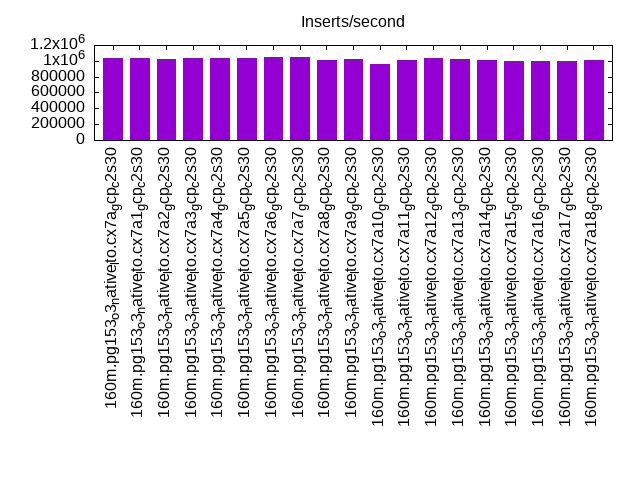
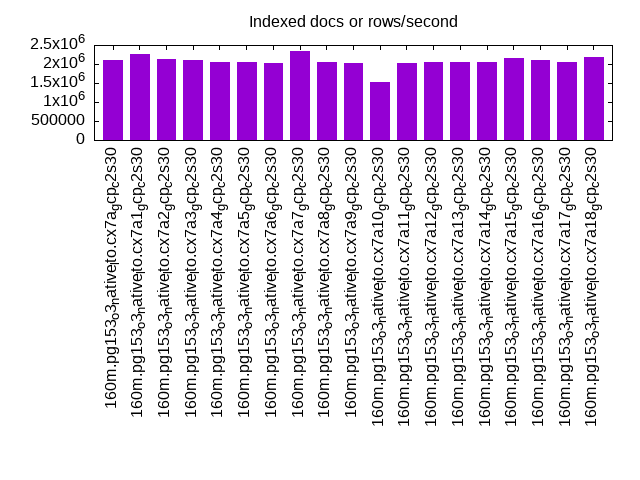
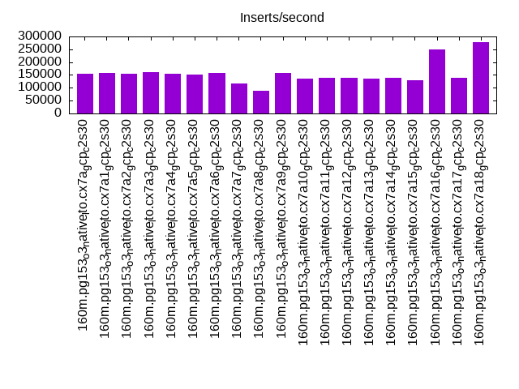
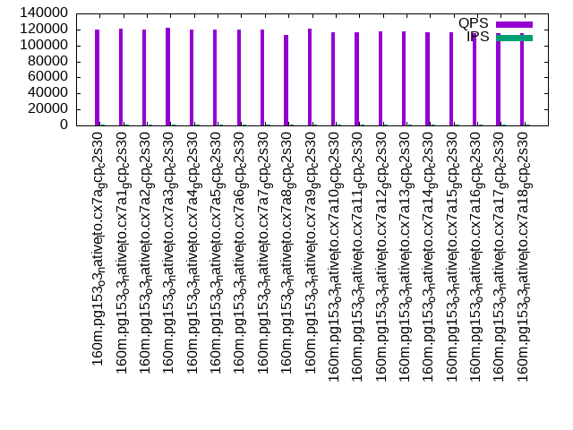
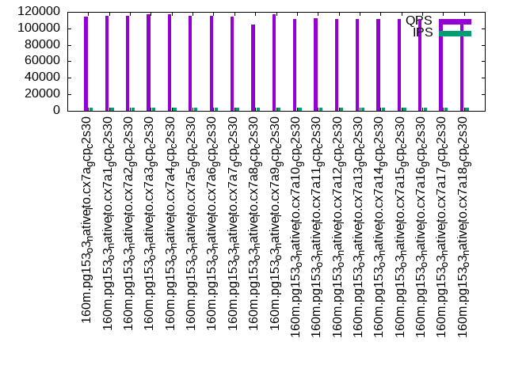
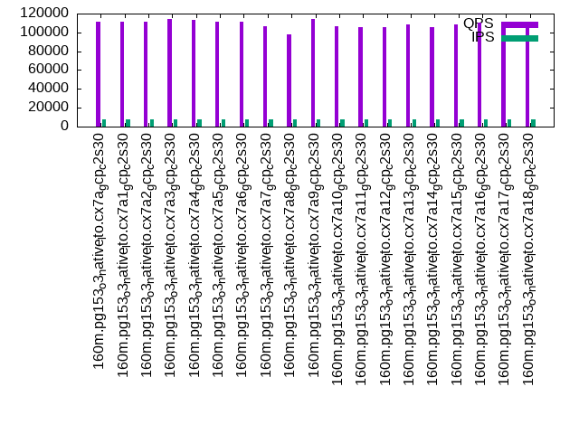

This is a report for the insert benchmark with 160M docs and 8 client(s). It is generated by scripts (bash, awk, sed) and Tufte might not be impressed. An overview of the insert benchmark is here and a short update is here. Below, by DBMS, I mean DBMS+version.config. An example is my8020.c10b40 where my means MySQL, 8020 is version 8.0.20 and c10b40 is the name for the configuration file.
The test server is a c2-standard-30 with 15 cores, hyperthreads disabled, 120G RAM and XFS with SW RAID 0 across 4 NVMe SSD. The benchmark was run with 8 clients and there were 1 or 3 connections per client (1 for queries or inserts without rate limits, 1+1 for rate limited inserts+deletes). It uses 8 tables, 1 per client. It loads 20M rows per table without secondary indexes, creates secondary indexes, then inserts 100M rows per table with a delete per insert to avoid growing the table. It then does 3 read+write tests for 3600s each that do queries as fast as possible with 100, 500 and then 1000 inserts/second/client concurrent with the queries and 1000 deletes/second to avoid growing the table. The database is cached by Postgres. Clients and the DBMS share one server. The per-database configs are in the per-database subdirectories here.
The tested DBMS are:
The numbers are inserts/s for l.i0 and l.i1, indexed docs (or rows) /s for l.x and queries/s for q*.2. The values are the average rate over the entire test for inserts (IPS) and queries (QPS). The range of values for IPS and QPS is split into 3 parts: bottom 25%, middle 50%, top 25%. Values in the bottom 25% have a red background, values in the top 25% have a green background and values in the middle have no color. A gray background is used for values that can be ignored because the DBMS did not sustain the target insert rate. Red backgrounds are not used when the minimum value is within 80% of the max value.
| dbms | l.i0 | l.x | l.i1 | q100.1 | q500.1 | q1000.1 |
|---|---|---|---|---|---|---|
| 160m.pg153_o3_native_lto.cx7a_gcp_c2s30 | 1032258 | 2106579 | 154202 | 119591 | 114612 | 111298 |
| 160m.pg153_o3_native_lto.cx7a1_gcp_c2s30 | 1032258 | 2254930 | 157264 | 120662 | 115075 | 111142 |
| 160m.pg153_o3_native_lto.cx7a2_gcp_c2s30 | 1025641 | 2134667 | 154769 | 119949 | 115140 | 110954 |
| 160m.pg153_o3_native_lto.cx7a3_gcp_c2s30 | 1032258 | 2106579 | 161681 | 122089 | 117536 | 114570 |
| 160m.pg153_o3_native_lto.cx7a4_gcp_c2s30 | 1038961 | 2052564 | 153905 | 119895 | 116741 | 113259 |
| 160m.pg153_o3_native_lto.cx7a5_gcp_c2s30 | 1038961 | 2052564 | 151429 | 119883 | 115072 | 111120 |
| 160m.pg153_o3_native_lto.cx7a6_gcp_c2s30 | 1045752 | 2026582 | 158667 | 119857 | 114774 | 111461 |
| 160m.pg153_o3_native_lto.cx7a7_gcp_c2s30 | 1045752 | 2354412 | 117405 | 119692 | 113870 | 106740 |
| 160m.pg153_o3_native_lto.cx7a8_gcp_c2s30 | 1012658 | 2052564 | 89787 | 113447 | 104968 | 97625 |
| 160m.pg153_o3_native_lto.cx7a9_gcp_c2s30 | 1019108 | 2026582 | 157666 | 120672 | 116680 | 113846 |
| 160m.pg153_o3_native_lto.cx7a10_gcp_c2s30 | 963855 | 1524762 | 134998 | 116432 | 111335 | 106827 |
| 160m.pg153_o3_native_lto.cx7a11_gcp_c2s30 | 1012658 | 2026582 | 139227 | 116907 | 112072 | 105734 |
| 160m.pg153_o3_native_lto.cx7a12_gcp_c2s30 | 1032258 | 2052564 | 139640 | 117258 | 111715 | 105898 |
| 160m.pg153_o3_native_lto.cx7a13_gcp_c2s30 | 1025641 | 2052564 | 134567 | 117248 | 111658 | 108036 |
| 160m.pg153_o3_native_lto.cx7a14_gcp_c2s30 | 1012658 | 2052564 | 138865 | 116547 | 111040 | 105715 |
| 160m.pg153_o3_native_lto.cx7a15_gcp_c2s30 | 993789 | 2163514 | 129345 | 116229 | 111335 | 108612 |
| 160m.pg153_o3_native_lto.cx7a16_gcp_c2s30 | 1000000 | 2106579 | 249299 | 115262 | 111254 | 110511 |
| 160m.pg153_o3_native_lto.cx7a17_gcp_c2s30 | 993789 | 2052564 | 137646 | 115269 | 109849 | 106692 |
| 160m.pg153_o3_native_lto.cx7a18_gcp_c2s30 | 1012658 | 2193151 | 278940 | 115836 | 111132 | 111408 |
This table has relative throughput, throughput for the DBMS relative to the DBMS in the first line, using the absolute throughput from the previous table.
| dbms | l.i0 | l.x | l.i1 | q100.1 | q500.1 | q1000.1 |
|---|---|---|---|---|---|---|
| 160m.pg153_o3_native_lto.cx7a_gcp_c2s30 | 1.00 | 1.00 | 1.00 | 1.00 | 1.00 | 1.00 |
| 160m.pg153_o3_native_lto.cx7a1_gcp_c2s30 | 1.00 | 1.07 | 1.02 | 1.01 | 1.00 | 1.00 |
| 160m.pg153_o3_native_lto.cx7a2_gcp_c2s30 | 0.99 | 1.01 | 1.00 | 1.00 | 1.00 | 1.00 |
| 160m.pg153_o3_native_lto.cx7a3_gcp_c2s30 | 1.00 | 1.00 | 1.05 | 1.02 | 1.03 | 1.03 |
| 160m.pg153_o3_native_lto.cx7a4_gcp_c2s30 | 1.01 | 0.97 | 1.00 | 1.00 | 1.02 | 1.02 |
| 160m.pg153_o3_native_lto.cx7a5_gcp_c2s30 | 1.01 | 0.97 | 0.98 | 1.00 | 1.00 | 1.00 |
| 160m.pg153_o3_native_lto.cx7a6_gcp_c2s30 | 1.01 | 0.96 | 1.03 | 1.00 | 1.00 | 1.00 |
| 160m.pg153_o3_native_lto.cx7a7_gcp_c2s30 | 1.01 | 1.12 | 0.76 | 1.00 | 0.99 | 0.96 |
| 160m.pg153_o3_native_lto.cx7a8_gcp_c2s30 | 0.98 | 0.97 | 0.58 | 0.95 | 0.92 | 0.88 |
| 160m.pg153_o3_native_lto.cx7a9_gcp_c2s30 | 0.99 | 0.96 | 1.02 | 1.01 | 1.02 | 1.02 |
| 160m.pg153_o3_native_lto.cx7a10_gcp_c2s30 | 0.93 | 0.72 | 0.88 | 0.97 | 0.97 | 0.96 |
| 160m.pg153_o3_native_lto.cx7a11_gcp_c2s30 | 0.98 | 0.96 | 0.90 | 0.98 | 0.98 | 0.95 |
| 160m.pg153_o3_native_lto.cx7a12_gcp_c2s30 | 1.00 | 0.97 | 0.91 | 0.98 | 0.97 | 0.95 |
| 160m.pg153_o3_native_lto.cx7a13_gcp_c2s30 | 0.99 | 0.97 | 0.87 | 0.98 | 0.97 | 0.97 |
| 160m.pg153_o3_native_lto.cx7a14_gcp_c2s30 | 0.98 | 0.97 | 0.90 | 0.97 | 0.97 | 0.95 |
| 160m.pg153_o3_native_lto.cx7a15_gcp_c2s30 | 0.96 | 1.03 | 0.84 | 0.97 | 0.97 | 0.98 |
| 160m.pg153_o3_native_lto.cx7a16_gcp_c2s30 | 0.97 | 1.00 | 1.62 | 0.96 | 0.97 | 0.99 |
| 160m.pg153_o3_native_lto.cx7a17_gcp_c2s30 | 0.96 | 0.97 | 0.89 | 0.96 | 0.96 | 0.96 |
| 160m.pg153_o3_native_lto.cx7a18_gcp_c2s30 | 0.98 | 1.04 | 1.81 | 0.97 | 0.97 | 1.00 |
This lists the average rate of inserts/s for the tests that do inserts concurrent with queries. For such tests the query rate is listed in the table above. The read+write tests are setup so that the insert rate should match the target rate every second. Cells that are not at least 95% of the target have a red background to indicate a failure to satisfy the target.
| dbms | q100.1 | q500.1 | q1000.1 |
|---|---|---|---|
| pg153_o3_native_lto.cx7a_gcp_c2s30 | 797 | 3987 | 7978 |
| pg153_o3_native_lto.cx7a1_gcp_c2s30 | 797 | 3987 | 7978 |
| pg153_o3_native_lto.cx7a2_gcp_c2s30 | 797 | 3987 | 7978 |
| pg153_o3_native_lto.cx7a3_gcp_c2s30 | 797 | 3987 | 7976 |
| pg153_o3_native_lto.cx7a4_gcp_c2s30 | 798 | 3987 | 7976 |
| pg153_o3_native_lto.cx7a5_gcp_c2s30 | 797 | 3988 | 7976 |
| pg153_o3_native_lto.cx7a6_gcp_c2s30 | 797 | 3987 | 7978 |
| pg153_o3_native_lto.cx7a7_gcp_c2s30 | 797 | 3987 | 7978 |
| pg153_o3_native_lto.cx7a8_gcp_c2s30 | 798 | 3988 | 7976 |
| pg153_o3_native_lto.cx7a9_gcp_c2s30 | 797 | 3987 | 7976 |
| pg153_o3_native_lto.cx7a10_gcp_c2s30 | 798 | 3987 | 7976 |
| pg153_o3_native_lto.cx7a11_gcp_c2s30 | 798 | 3987 | 7943 |
| pg153_o3_native_lto.cx7a12_gcp_c2s30 | 797 | 3987 | 7978 |
| pg153_o3_native_lto.cx7a13_gcp_c2s30 | 798 | 3987 | 7976 |
| pg153_o3_native_lto.cx7a14_gcp_c2s30 | 797 | 3988 | 7976 |
| pg153_o3_native_lto.cx7a15_gcp_c2s30 | 797 | 3987 | 7976 |
| pg153_o3_native_lto.cx7a16_gcp_c2s30 | 797 | 3987 | 7978 |
| pg153_o3_native_lto.cx7a17_gcp_c2s30 | 797 | 3988 | 7976 |
| pg153_o3_native_lto.cx7a18_gcp_c2s30 | 797 | 3987 | 7976 |
| target | 800 | 4000 | 8000 |
l.i0: load without secondary indexes. Graphs for performance per 1-second interval are here.
Average throughput:
Insert response time histogram: each cell has the percentage of responses that take <= the time in the header and max is the max response time in seconds. For the max column values in the top 25% of the range have a red background and in the bottom 25% of the range have a green background. The red background is not used when the min value is within 80% of the max value.
| dbms | 256us | 1ms | 4ms | 16ms | 64ms | 256ms | 1s | 4s | 16s | gt | max |
|---|---|---|---|---|---|---|---|---|---|---|---|
| pg153_o3_native_lto.cx7a_gcp_c2s30 | 97.701 | 2.236 | 0.040 | 0.008 | 0.013 | 0.002 | 0.704 | ||||
| pg153_o3_native_lto.cx7a1_gcp_c2s30 | 98.225 | 1.716 | 0.038 | 0.005 | 0.012 | 0.004 | 0.397 | ||||
| pg153_o3_native_lto.cx7a2_gcp_c2s30 | 97.866 | 2.072 | 0.038 | 0.006 | 0.015 | 0.003 | 0.523 | ||||
| pg153_o3_native_lto.cx7a3_gcp_c2s30 | 97.950 | 1.984 | 0.045 | 0.006 | 0.013 | 0.003 | 0.407 | ||||
| pg153_o3_native_lto.cx7a4_gcp_c2s30 | 98.089 | 1.849 | 0.041 | 0.005 | 0.011 | 0.004 | 0.697 | ||||
| pg153_o3_native_lto.cx7a5_gcp_c2s30 | 98.199 | 1.734 | 0.043 | 0.006 | 0.016 | 0.003 | 0.408 | ||||
| pg153_o3_native_lto.cx7a6_gcp_c2s30 | 98.170 | 1.768 | 0.046 | 0.003 | 0.010 | 0.004 | 0.448 | ||||
| pg153_o3_native_lto.cx7a7_gcp_c2s30 | 97.968 | 1.955 | 0.052 | 0.010 | 0.012 | 0.002 | 0.442 | ||||
| pg153_o3_native_lto.cx7a8_gcp_c2s30 | 97.754 | 2.122 | 0.077 | 0.031 | 0.011 | 0.004 | 0.401 | ||||
| pg153_o3_native_lto.cx7a9_gcp_c2s30 | 97.658 | 2.283 | 0.037 | 0.007 | 0.011 | 0.004 | 0.413 | ||||
| pg153_o3_native_lto.cx7a10_gcp_c2s30 | 97.534 | 2.405 | 0.035 | 0.005 | 0.009 | 0.012 | 0.876 | ||||
| pg153_o3_native_lto.cx7a11_gcp_c2s30 | 97.536 | 2.402 | 0.040 | 0.004 | 0.015 | 0.003 | 0.550 | ||||
| pg153_o3_native_lto.cx7a12_gcp_c2s30 | 97.786 | 2.167 | 0.037 | 0.002 | 0.005 | 0.003 | 0.756 | ||||
| pg153_o3_native_lto.cx7a13_gcp_c2s30 | 97.983 | 2.004 | 0.005 | 0.002 | 0.003 | 0.002 | 0.605 | ||||
| pg153_o3_native_lto.cx7a14_gcp_c2s30 | 97.599 | 2.337 | 0.042 | 0.005 | 0.015 | 0.002 | 0.420 | ||||
| pg153_o3_native_lto.cx7a15_gcp_c2s30 | 97.264 | 2.589 | 0.105 | 0.026 | 0.012 | 0.003 | 0.483 | ||||
| pg153_o3_native_lto.cx7a16_gcp_c2s30 | 97.436 | 2.505 | 0.036 | 0.006 | 0.014 | 0.003 | 0.322 | ||||
| pg153_o3_native_lto.cx7a17_gcp_c2s30 | 97.533 | 2.410 | 0.038 | 0.002 | 0.013 | 0.003 | 0.443 | ||||
| pg153_o3_native_lto.cx7a18_gcp_c2s30 | 97.468 | 2.469 | 0.042 | 0.005 | 0.016 | 0.001 | 0.458 |
Delete response time histogram: each cell has the percentage of responses that take <= the time in the header and max is the max response time in seconds. For the max column values in the top 25% of the range have a red background and in the bottom 25% of the range have a green background. The red background is not used when the min value is within 80% of the max value.
| dbms | 0.000 | sum:DBMS | |||||||||
|---|---|---|---|---|---|---|---|---|---|---|---|
| pg153_o3_native_lto.cx7a_gcp_c2s30 | |||||||||||
| pg153_o3_native_lto.cx7a1_gcp_c2s30 | |||||||||||
| pg153_o3_native_lto.cx7a2_gcp_c2s30 | |||||||||||
| pg153_o3_native_lto.cx7a3_gcp_c2s30 | |||||||||||
| pg153_o3_native_lto.cx7a4_gcp_c2s30 | |||||||||||
| pg153_o3_native_lto.cx7a5_gcp_c2s30 | |||||||||||
| pg153_o3_native_lto.cx7a6_gcp_c2s30 | |||||||||||
| pg153_o3_native_lto.cx7a7_gcp_c2s30 | |||||||||||
| pg153_o3_native_lto.cx7a8_gcp_c2s30 | |||||||||||
| pg153_o3_native_lto.cx7a9_gcp_c2s30 |
Performance metrics for the DBMS listed above. Some are normalized by throughput, others are not. Legend for results is here.
ips qps rps rmbps wps wmbps rpq rkbpq wpi wkbpi csps cpups cspq cpupq dbgb1 dbgb2 rss maxop p50 p99 tag 1032258 0 0 0.0 1014.2 332.5 0.000 0.000 0.001 0.330 86436 74.1 0.084 11 15.3 41.4 0.0 0.704 149937 22176 160m.pg153_o3_native_lto.cx7a_gcp_c2s30 1032258 0 0 0.0 1015.5 333.5 0.000 0.000 0.001 0.331 86789 74.2 0.084 11 15.3 41.4 NA 0.397 151735 27071 160m.pg153_o3_native_lto.cx7a1_gcp_c2s30 1025641 0 0 0.0 1016.3 334.3 0.000 0.000 0.001 0.334 86805 74.5 0.085 11 15.3 41.4 0.0 0.523 149539 25073 160m.pg153_o3_native_lto.cx7a2_gcp_c2s30 1032258 0 0 0.0 1018.1 335.3 0.000 0.000 0.001 0.333 86496 74.2 0.084 11 15.3 41.4 NA 0.407 150937 27170 160m.pg153_o3_native_lto.cx7a3_gcp_c2s30 1038961 0 0 0.0 1040.8 342.7 0.000 0.000 0.001 0.338 87672 75.4 0.084 11 15.3 41.4 0.0 0.697 150738 29078 160m.pg153_o3_native_lto.cx7a4_gcp_c2s30 1038961 0 0 0.0 1041.9 343.2 0.000 0.000 0.001 0.338 87359 75.6 0.084 11 15.3 41.4 0.0 0.408 151635 23874 160m.pg153_o3_native_lto.cx7a5_gcp_c2s30 1045752 0 0 0.0 1043.7 342.6 0.000 0.000 0.001 0.335 88081 75.8 0.084 11 15.3 41.4 0.0 0.448 151936 13185 160m.pg153_o3_native_lto.cx7a6_gcp_c2s30 1045752 0 0 0.0 1286.6 338.0 0.000 0.000 0.001 0.331 89006 76.1 0.085 11 15.3 31.4 0.0 0.442 151236 31466 160m.pg153_o3_native_lto.cx7a7_gcp_c2s30 1012658 0 35 0.2 3779.2 374.5 0.000 0.000 0.004 0.379 84719 74.4 0.084 11 15.3 41.4 0.0 0.401 149088 27270 160m.pg153_o3_native_lto.cx7a8_gcp_c2s30 1019108 0 0 0.0 1025.2 338.9 0.000 0.000 0.001 0.341 85668 74.8 0.084 11 15.3 41.4 0.0 0.413 148340 14484 160m.pg153_o3_native_lto.cx7a9_gcp_c2s30 963855 0 0 0.0 937.1 316.6 0.000 0.000 0.001 0.336 80096 71.1 0.083 11 15.3 41.4 0.0 0.876 146491 11088 160m.pg153_o3_native_lto.cx7a10_gcp_c2s30 1012658 0 0 0.0 1008.9 332.1 0.000 0.000 0.001 0.336 85983 75.3 0.085 11 15.3 41.4 0.0 0.550 146094 400 160m.pg153_o3_native_lto.cx7a11_gcp_c2s30 1032258 0 0 0.0 1041.1 345.2 0.000 0.000 0.001 0.342 87606 76.8 0.085 11 15.3 41.4 0.0 0.756 148139 33364 160m.pg153_o3_native_lto.cx7a12_gcp_c2s30 1025641 0 0 0.0 974.7 332.2 0.000 0.000 0.001 0.332 89251 75.4 0.087 11 15.3 41.6 0.0 0.605 147889 51392 160m.pg153_o3_native_lto.cx7a13_gcp_c2s30 1012658 0 0 0.0 1007.1 332.9 0.000 0.000 0.001 0.337 85915 75.7 0.085 11 15.3 41.4 0.0 0.420 145742 36161 160m.pg153_o3_native_lto.cx7a14_gcp_c2s30 993789 0 0 0.0 1200.6 372.8 0.000 0.000 0.001 0.384 84132 74.2 0.085 11 15.3 42.9 0.0 0.483 144742 6393 160m.pg153_o3_native_lto.cx7a15_gcp_c2s30 1000000 0 0 0.0 1006.5 333.9 0.000 0.000 0.001 0.342 86289 75.3 0.086 11 15.3 41.4 0.0 0.322 145044 26581 160m.pg153_o3_native_lto.cx7a16_gcp_c2s30 993789 0 0 0.0 982.2 322.6 0.000 0.000 0.001 0.332 83762 75.0 0.084 11 15.3 41.4 0.0 0.443 143141 35261 160m.pg153_o3_native_lto.cx7a17_gcp_c2s30 1012658 0 0 0.0 1006.0 333.4 0.000 0.000 0.001 0.337 85339 75.7 0.084 11 15.3 41.4 0.0 0.458 144898 11891 160m.pg153_o3_native_lto.cx7a18_gcp_c2s30
l.x: create secondary indexes.
Average throughput:
Performance metrics for the DBMS listed above. Some are normalized by throughput, others are not. Legend for results is here.
ips qps rps rmbps wps wmbps rpq rkbpq wpi wkbpi csps cpups cspq cpupq dbgb1 dbgb2 rss maxop p50 p99 tag 2106579 0 0 0.0 1517.4 646.9 0.000 0.000 0.001 0.314 23135 35.6 0.011 3 29.4 68.3 0.0 0.001 NA NA 160m.pg153_o3_native_lto.cx7a_gcp_c2s30 2254930 0 0 0.0 1273.1 550.8 0.000 0.000 0.001 0.250 10043 38.6 0.004 3 29.4 63.3 0.0 0.001 NA NA 160m.pg153_o3_native_lto.cx7a1_gcp_c2s30 2134667 0 0 0.0 1515.9 631.4 0.000 0.000 0.001 0.303 18955 35.6 0.009 3 29.4 68.3 0.0 0.001 NA NA 160m.pg153_o3_native_lto.cx7a2_gcp_c2s30 2106579 0 0 0.0 1555.7 635.2 0.000 0.000 0.001 0.309 23897 35.3 0.011 3 29.4 68.3 0.0 0.001 NA NA 160m.pg153_o3_native_lto.cx7a3_gcp_c2s30 2052564 0 0 0.0 1432.8 611.6 0.000 0.000 0.001 0.305 18705 35.6 0.009 3 29.4 68.3 0.0 0.001 NA NA 160m.pg153_o3_native_lto.cx7a4_gcp_c2s30 2052564 0 0 0.0 1435.2 613.4 0.000 0.000 0.001 0.306 18059 35.4 0.009 3 29.4 68.3 0.0 0.001 NA NA 160m.pg153_o3_native_lto.cx7a5_gcp_c2s30 2026582 0 0 0.0 1427.9 610.2 0.000 0.000 0.001 0.308 17688 35.6 0.009 3 29.4 68.3 0.0 0.001 NA NA 160m.pg153_o3_native_lto.cx7a6_gcp_c2s30 2354412 0 0 0.0 1409.2 543.5 0.000 0.000 0.001 0.236 30190 40.1 0.013 3 29.4 45.5 0.0 0.001 NA NA 160m.pg153_o3_native_lto.cx7a7_gcp_c2s30 2052564 0 5072 29.6 3395.1 631.2 0.002 0.015 0.002 0.315 15277 37.4 0.007 3 29.4 68.1 0.0 0.002 NA NA 160m.pg153_o3_native_lto.cx7a8_gcp_c2s30 2026582 0 0 0.0 1379.0 595.4 0.000 0.000 0.001 0.301 26588 35.6 0.013 3 29.4 68.3 0.0 0.001 NA NA 160m.pg153_o3_native_lto.cx7a9_gcp_c2s30 1524762 0 0 0.0 1115.8 471.5 0.000 0.000 0.001 0.317 10317 24.9 0.007 2 29.4 68.3 0.0 0.003 NA NA 160m.pg153_o3_native_lto.cx7a10_gcp_c2s30 2026582 0 0 0.0 1420.7 598.5 0.000 0.000 0.001 0.302 19163 36.0 0.009 3 29.4 68.3 0.0 0.001 NA NA 160m.pg153_o3_native_lto.cx7a11_gcp_c2s30 2052564 0 0 0.0 1408.4 601.6 0.000 0.000 0.001 0.300 21221 35.8 0.010 3 29.4 68.3 0.0 0.001 NA NA 160m.pg153_o3_native_lto.cx7a12_gcp_c2s30 2052564 0 0 0.0 1388.8 585.6 0.000 0.000 0.001 0.292 15155 36.3 0.007 3 29.4 68.5 0.0 0.001 NA NA 160m.pg153_o3_native_lto.cx7a13_gcp_c2s30 2052564 0 0 0.0 1490.4 630.0 0.000 0.000 0.001 0.314 23182 36.2 0.011 3 29.4 68.3 0.0 0.001 NA NA 160m.pg153_o3_native_lto.cx7a14_gcp_c2s30 2163514 0 0 0.0 1584.3 532.2 0.000 0.000 0.001 0.252 24572 38.4 0.011 3 29.4 61.5 0.0 0.001 NA NA 160m.pg153_o3_native_lto.cx7a15_gcp_c2s30 2106579 0 0 0.0 1479.2 627.7 0.000 0.000 0.001 0.305 16783 36.1 0.008 3 29.4 68.3 0.0 0.001 NA NA 160m.pg153_o3_native_lto.cx7a16_gcp_c2s30 2052564 0 0 0.0 1475.4 620.2 0.000 0.000 0.001 0.309 23404 36.2 0.011 3 29.4 68.3 0.0 0.001 NA NA 160m.pg153_o3_native_lto.cx7a17_gcp_c2s30 2193151 0 0 0.0 1195.0 514.6 0.000 0.000 0.001 0.240 8605 38.8 0.004 3 29.4 63.3 0.0 0.001 NA NA 160m.pg153_o3_native_lto.cx7a18_gcp_c2s30
l.i1: continue load after secondary indexes created. Graphs for performance per 1-second interval are here.
Average throughput:
Insert response time histogram: each cell has the percentage of responses that take <= the time in the header and max is the max response time in seconds. For the max column values in the top 25% of the range have a red background and in the bottom 25% of the range have a green background. The red background is not used when the min value is within 80% of the max value.
| dbms | 256us | 1ms | 4ms | 16ms | 64ms | 256ms | 1s | 4s | 16s | gt | max |
|---|---|---|---|---|---|---|---|---|---|---|---|
| pg153_o3_native_lto.cx7a_gcp_c2s30 | 56.278 | 43.383 | 0.261 | 0.075 | 0.002 | nonzero | 0.503 | ||||
| pg153_o3_native_lto.cx7a1_gcp_c2s30 | 55.942 | 43.982 | 0.062 | 0.013 | 0.001 | nonzero | 0.432 | ||||
| pg153_o3_native_lto.cx7a2_gcp_c2s30 | 51.916 | 47.768 | 0.244 | 0.071 | 0.001 | nonzero | 0.266 | ||||
| pg153_o3_native_lto.cx7a3_gcp_c2s30 | 60.183 | 39.799 | 0.017 | 0.001 | 0.001 | nonzero | 0.406 | ||||
| pg153_o3_native_lto.cx7a4_gcp_c2s30 | 54.924 | 44.736 | 0.261 | 0.078 | 0.002 | nonzero | 0.389 | ||||
| pg153_o3_native_lto.cx7a5_gcp_c2s30 | 54.254 | 45.413 | 0.255 | 0.076 | 0.002 | 0.244 | |||||
| pg153_o3_native_lto.cx7a6_gcp_c2s30 | 56.339 | 43.359 | 0.240 | 0.060 | 0.002 | nonzero | 0.474 | ||||
| pg153_o3_native_lto.cx7a7_gcp_c2s30 | 34.492 | 62.391 | 1.876 | 1.220 | 0.020 | nonzero | 0.657 | ||||
| pg153_o3_native_lto.cx7a8_gcp_c2s30 | 1.225 | 82.009 | 15.159 | 1.564 | 0.043 | nonzero | 0.318 | ||||
| pg153_o3_native_lto.cx7a9_gcp_c2s30 | 55.884 | 43.809 | 0.243 | 0.063 | 0.001 | nonzero | 0.325 | ||||
| pg153_o3_native_lto.cx7a10_gcp_c2s30 | 9.392 | 90.077 | 0.210 | 0.312 | 0.007 | 0.001 | 0.934 | ||||
| pg153_o3_native_lto.cx7a11_gcp_c2s30 | 11.103 | 88.491 | 0.314 | 0.090 | 0.001 | nonzero | 0.303 | ||||
| pg153_o3_native_lto.cx7a12_gcp_c2s30 | 15.492 | 84.304 | 0.100 | 0.099 | 0.004 | nonzero | 0.676 | ||||
| pg153_o3_native_lto.cx7a13_gcp_c2s30 | 11.249 | 88.655 | 0.037 | 0.049 | 0.010 | 0.001 | 0.733 | ||||
| pg153_o3_native_lto.cx7a14_gcp_c2s30 | 7.710 | 91.945 | 0.275 | 0.069 | 0.001 | nonzero | 0.262 | ||||
| pg153_o3_native_lto.cx7a15_gcp_c2s30 | 4.773 | 94.020 | 1.006 | 0.197 | 0.005 | 0.209 | |||||
| pg153_o3_native_lto.cx7a16_gcp_c2s30 | 4.229 | 94.923 | 0.664 | 0.183 | 0.001 | 0.215 | |||||
| pg153_o3_native_lto.cx7a17_gcp_c2s30 | 7.443 | 92.190 | 0.284 | 0.082 | 0.001 | nonzero | 0.306 | ||||
| pg153_o3_native_lto.cx7a18_gcp_c2s30 | 36.666 | 62.935 | 0.353 | 0.046 | 0.001 | nonzero | 0.297 |
Delete response time histogram: each cell has the percentage of responses that take <= the time in the header and max is the max response time in seconds. For the max column values in the top 25% of the range have a red background and in the bottom 25% of the range have a green background. The red background is not used when the min value is within 80% of the max value.
| dbms | 256us | 1ms | 4ms | 16ms | 64ms | 256ms | 1s | 4s | 16s | gt | max |
|---|---|---|---|---|---|---|---|---|---|---|---|
| pg153_o3_native_lto.cx7a_gcp_c2s30 | 83.817 | 2.756 | 2.318 | 7.199 | 3.907 | 0.004 | nonzero | 0.306 | |||
| pg153_o3_native_lto.cx7a1_gcp_c2s30 | 83.507 | 3.087 | 2.562 | 7.134 | 3.708 | 0.001 | nonzero | 0.439 | |||
| pg153_o3_native_lto.cx7a2_gcp_c2s30 | 83.645 | 2.854 | 1.992 | 7.531 | 3.975 | 0.002 | nonzero | 0.270 | |||
| pg153_o3_native_lto.cx7a3_gcp_c2s30 | 84.116 | 2.556 | 2.942 | 6.678 | 3.707 | 0.001 | nonzero | 0.416 | |||
| pg153_o3_native_lto.cx7a4_gcp_c2s30 | 83.802 | 2.549 | 2.426 | 7.118 | 4.102 | 0.002 | nonzero | 0.365 | |||
| pg153_o3_native_lto.cx7a5_gcp_c2s30 | 83.643 | 2.744 | 2.494 | 7.093 | 4.024 | 0.002 | 0.250 | ||||
| pg153_o3_native_lto.cx7a6_gcp_c2s30 | 83.869 | 2.637 | 2.649 | 6.947 | 3.896 | 0.002 | nonzero | 0.488 | |||
| pg153_o3_native_lto.cx7a7_gcp_c2s30 | 81.070 | 3.378 | 1.938 | 7.889 | 5.676 | 0.048 | nonzero | 0.779 | |||
| pg153_o3_native_lto.cx7a8_gcp_c2s30 | 84.759 | 5.471 | 0.575 | 4.524 | 4.663 | 0.008 | nonzero | 0.358 | |||
| pg153_o3_native_lto.cx7a9_gcp_c2s30 | 83.716 | 2.705 | 2.518 | 7.169 | 3.890 | 0.002 | nonzero | 0.340 | |||
| pg153_o3_native_lto.cx7a10_gcp_c2s30 | 83.608 | 2.434 | 2.387 | 6.653 | 4.899 | 0.017 | 0.001 | 0.947 | |||
| pg153_o3_native_lto.cx7a11_gcp_c2s30 | 83.496 | 2.604 | 2.105 | 7.070 | 4.724 | 0.002 | nonzero | 0.309 | |||
| pg153_o3_native_lto.cx7a12_gcp_c2s30 | 83.564 | 2.666 | 2.171 | 7.036 | 4.556 | 0.006 | nonzero | 0.680 | |||
| pg153_o3_native_lto.cx7a13_gcp_c2s30 | 83.964 | 2.522 | 1.941 | 6.889 | 4.669 | 0.016 | 0.001 | 0.743 | |||
| pg153_o3_native_lto.cx7a14_gcp_c2s30 | 83.828 | 2.303 | 2.132 | 6.745 | 4.991 | 0.001 | nonzero | 0.266 | |||
| pg153_o3_native_lto.cx7a15_gcp_c2s30 | 81.775 | 3.553 | 1.829 | 7.464 | 5.371 | 0.008 | nonzero | 0.356 | |||
| pg153_o3_native_lto.cx7a16_gcp_c2s30 | 77.981 | 8.245 | 11.283 | 2.393 | 0.098 | nonzero | 0.216 | ||||
| pg153_o3_native_lto.cx7a17_gcp_c2s30 | 83.762 | 2.365 | 2.131 | 6.952 | 4.789 | 0.001 | nonzero | 0.307 | |||
| pg153_o3_native_lto.cx7a18_gcp_c2s30 | 77.114 | 9.949 | 10.945 | 1.972 | 0.020 | 0.001 | nonzero | 0.302 |
Performance metrics for the DBMS listed above. Some are normalized by throughput, others are not. Legend for results is here.
ips qps rps rmbps wps wmbps rpq rkbpq wpi wkbpi csps cpups cspq cpupq dbgb1 dbgb2 rss maxop p50 p99 tag 154202 0 18 0.1 1717.5 201.1 0.000 0.001 0.011 1.335 69002 64.2 0.447 62 48.9 118.9 0.0 0.503 4795 1948 160m.pg153_o3_native_lto.cx7a_gcp_c2s30 157264 0 2 0.0 1412.4 155.5 0.000 0.000 0.009 1.012 70563 65.3 0.449 62 48.6 118.6 0.0 0.432 4545 2148 160m.pg153_o3_native_lto.cx7a1_gcp_c2s30 154769 0 19 0.1 1619.8 199.5 0.000 0.001 0.010 1.320 69104 65.4 0.446 63 49.0 119.1 0.0 0.266 4598 2048 160m.pg153_o3_native_lto.cx7a2_gcp_c2s30 161681 0 3 0.0 1264.0 128.5 0.000 0.000 0.008 0.814 71451 64.9 0.442 60 48.9 104.4 0.0 0.406 4545 2198 160m.pg153_o3_native_lto.cx7a3_gcp_c2s30 153905 0 19 0.1 1632.1 195.8 0.000 0.001 0.011 1.303 69289 65.0 0.450 63 48.8 118.9 0.0 0.389 4747 2148 160m.pg153_o3_native_lto.cx7a4_gcp_c2s30 151429 0 16 0.1 1723.7 196.4 0.000 0.001 0.011 1.328 67685 63.7 0.447 63 48.9 119.0 0.0 0.244 4645 2198 160m.pg153_o3_native_lto.cx7a5_gcp_c2s30 158667 0 18 0.1 1693.2 201.8 0.000 0.001 0.011 1.302 70909 65.7 0.447 62 48.8 118.8 0.0 0.474 4895 2098 160m.pg153_o3_native_lto.cx7a6_gcp_c2s30 117405 0 4 0.0 16242.0 850.8 0.000 0.000 0.138 7.421 51689 57.2 0.440 73 48.8 64.8 0.0 0.657 4495 1249 160m.pg153_o3_native_lto.cx7a7_gcp_c2s30 89787 0 7266 83.6 89043.1 1260.1 0.081 0.954 0.992 14.371 59928 53.1 0.667 89 50.6 115.6 0.0 0.318 11138 1798 160m.pg153_o3_native_lto.cx7a8_gcp_c2s30 157666 0 18 0.1 1644.1 200.9 0.000 0.001 0.010 1.305 70446 65.8 0.447 63 48.9 119.0 0.0 0.325 4895 2148 160m.pg153_o3_native_lto.cx7a9_gcp_c2s30 134998 0 15 0.1 1438.1 176.8 0.000 0.001 0.011 1.341 60836 61.9 0.451 69 48.8 118.9 0.0 0.934 4345 1449 160m.pg153_o3_native_lto.cx7a10_gcp_c2s30 139227 0 15 0.1 1606.9 182.9 0.000 0.001 0.012 1.345 62928 64.1 0.452 69 49.0 119.1 0.0 0.303 4145 1848 160m.pg153_o3_native_lto.cx7a11_gcp_c2s30 139640 0 18 0.1 1592.7 183.2 0.000 0.001 0.011 1.343 63178 63.3 0.452 68 49.0 119.0 0.0 0.676 3947 1748 160m.pg153_o3_native_lto.cx7a12_gcp_c2s30 134567 0 15 0.1 1466.0 181.5 0.000 0.001 0.011 1.381 61086 61.1 0.454 68 49.1 119.2 NA 0.733 4295 1848 160m.pg153_o3_native_lto.cx7a13_gcp_c2s30 138865 0 16 0.1 1414.6 178.4 0.000 0.001 0.010 1.315 63370 64.6 0.456 70 48.6 118.7 0.0 0.262 3996 1898 160m.pg153_o3_native_lto.cx7a14_gcp_c2s30 129345 0 4 0.0 9664.8 552.7 0.000 0.000 0.075 4.376 57275 65.6 0.443 76 49.1 81.1 0.0 0.209 4194 1648 160m.pg153_o3_native_lto.cx7a15_gcp_c2s30 249299 0 33 0.2 1612.8 260.9 0.000 0.001 0.006 1.072 96086 71.4 0.385 43 41.2 111.3 0.0 0.215 39607 4845 160m.pg153_o3_native_lto.cx7a16_gcp_c2s30 137646 0 15 0.1 1506.6 179.5 0.000 0.001 0.011 1.335 62500 63.9 0.454 70 48.8 118.8 0.0 0.306 3896 1799 160m.pg153_o3_native_lto.cx7a17_gcp_c2s30 278940 0 10 0.0 1472.8 226.5 0.000 0.000 0.005 0.831 104820 76.4 0.376 41 41.4 111.5 0.0 0.297 42553 7991 160m.pg153_o3_native_lto.cx7a18_gcp_c2s30
q100.1: range queries with 100 insert/s per client. Graphs for performance per 1-second interval are here.
Average throughput:
Query response time histogram: each cell has the percentage of responses that take <= the time in the header and max is the max response time in seconds. For max values in the top 25% of the range have a red background and in the bottom 25% of the range have a green background. The red background is not used when the min value is within 80% of the max value.
| dbms | 256us | 1ms | 4ms | 16ms | 64ms | 256ms | 1s | 4s | 16s | gt | max |
|---|---|---|---|---|---|---|---|---|---|---|---|
| pg153_o3_native_lto.cx7a_gcp_c2s30 | 99.996 | 0.004 | 0.001 | nonzero | 0.009 | ||||||
| pg153_o3_native_lto.cx7a1_gcp_c2s30 | 99.996 | 0.003 | 0.001 | nonzero | 0.010 | ||||||
| pg153_o3_native_lto.cx7a2_gcp_c2s30 | 99.995 | 0.004 | 0.001 | nonzero | nonzero | 0.338 | |||||
| pg153_o3_native_lto.cx7a3_gcp_c2s30 | 99.996 | 0.003 | 0.001 | nonzero | 0.007 | ||||||
| pg153_o3_native_lto.cx7a4_gcp_c2s30 | 99.997 | 0.003 | 0.001 | nonzero | 0.006 | ||||||
| pg153_o3_native_lto.cx7a5_gcp_c2s30 | 99.995 | 0.004 | 0.001 | nonzero | 0.008 | ||||||
| pg153_o3_native_lto.cx7a6_gcp_c2s30 | 99.995 | 0.004 | 0.001 | nonzero | nonzero | 0.338 | |||||
| pg153_o3_native_lto.cx7a7_gcp_c2s30 | 99.995 | 0.004 | 0.001 | nonzero | 0.006 | ||||||
| pg153_o3_native_lto.cx7a8_gcp_c2s30 | 99.961 | 0.038 | 0.001 | nonzero | nonzero | nonzero | 0.229 | ||||
| pg153_o3_native_lto.cx7a9_gcp_c2s30 | 99.995 | 0.004 | 0.001 | nonzero | 0.009 | ||||||
| pg153_o3_native_lto.cx7a10_gcp_c2s30 | 99.995 | 0.004 | 0.001 | nonzero | 0.008 | ||||||
| pg153_o3_native_lto.cx7a11_gcp_c2s30 | 99.995 | 0.004 | 0.001 | nonzero | 0.008 | ||||||
| pg153_o3_native_lto.cx7a12_gcp_c2s30 | 99.995 | 0.004 | 0.001 | nonzero | 0.008 | ||||||
| pg153_o3_native_lto.cx7a13_gcp_c2s30 | 99.995 | 0.004 | 0.001 | nonzero | 0.010 | ||||||
| pg153_o3_native_lto.cx7a14_gcp_c2s30 | 99.995 | 0.004 | 0.001 | nonzero | 0.012 | ||||||
| pg153_o3_native_lto.cx7a15_gcp_c2s30 | 99.995 | 0.004 | 0.001 | nonzero | 0.008 | ||||||
| pg153_o3_native_lto.cx7a16_gcp_c2s30 | 99.995 | 0.004 | 0.001 | nonzero | 0.009 | ||||||
| pg153_o3_native_lto.cx7a17_gcp_c2s30 | 99.995 | 0.004 | 0.001 | nonzero | 0.007 | ||||||
| pg153_o3_native_lto.cx7a18_gcp_c2s30 | 99.995 | 0.004 | 0.001 | nonzero | 0.012 |
Insert response time histogram: each cell has the percentage of responses that take <= the time in the header and max is the max response time in seconds. For max values in the top 25% of the range have a red background and in the bottom 25% of the range have a green background. The red background is not used when the min value is within 80% of the max value.
| dbms | 256us | 1ms | 4ms | 16ms | 64ms | 256ms | 1s | 4s | 16s | gt | max |
|---|---|---|---|---|---|---|---|---|---|---|---|
| pg153_o3_native_lto.cx7a_gcp_c2s30 | 99.997 | 0.003 | 0.012 | ||||||||
| pg153_o3_native_lto.cx7a1_gcp_c2s30 | 0.019 | 99.762 | 0.219 | 0.011 | |||||||
| pg153_o3_native_lto.cx7a2_gcp_c2s30 | 0.679 | 99.316 | 0.005 | 0.013 | |||||||
| pg153_o3_native_lto.cx7a3_gcp_c2s30 | 48.030 | 51.970 | 0.004 | ||||||||
| pg153_o3_native_lto.cx7a4_gcp_c2s30 | 15.927 | 84.071 | 0.002 | 0.011 | |||||||
| pg153_o3_native_lto.cx7a5_gcp_c2s30 | 1.000 | 98.986 | 0.014 | 0.014 | |||||||
| pg153_o3_native_lto.cx7a6_gcp_c2s30 | 1.201 | 98.793 | 0.005 | 0.010 | |||||||
| pg153_o3_native_lto.cx7a7_gcp_c2s30 | 99.998 | 0.002 | 0.012 | ||||||||
| pg153_o3_native_lto.cx7a8_gcp_c2s30 | 81.936 | 17.797 | 0.260 | 0.007 | 0.185 | ||||||
| pg153_o3_native_lto.cx7a9_gcp_c2s30 | 6.825 | 93.172 | 0.003 | 0.011 | |||||||
| pg153_o3_native_lto.cx7a10_gcp_c2s30 | 0.007 | 99.991 | 0.002 | 0.009 | |||||||
| pg153_o3_native_lto.cx7a11_gcp_c2s30 | 0.007 | 99.986 | 0.007 | 0.007 | |||||||
| pg153_o3_native_lto.cx7a12_gcp_c2s30 | 0.061 | 99.938 | 0.002 | 0.010 | |||||||
| pg153_o3_native_lto.cx7a13_gcp_c2s30 | 0.043 | 99.951 | 0.005 | 0.005 | |||||||
| pg153_o3_native_lto.cx7a14_gcp_c2s30 | 0.028 | 99.965 | 0.007 | 0.010 | |||||||
| pg153_o3_native_lto.cx7a15_gcp_c2s30 | 99.995 | 0.005 | 0.012 | ||||||||
| pg153_o3_native_lto.cx7a16_gcp_c2s30 | 0.031 | 99.964 | 0.005 | 0.013 | |||||||
| pg153_o3_native_lto.cx7a17_gcp_c2s30 | 0.016 | 99.979 | 0.005 | 0.008 | |||||||
| pg153_o3_native_lto.cx7a18_gcp_c2s30 | 0.477 | 99.385 | 0.137 | 0.014 |
Delete response time histogram: each cell has the percentage of responses that take <= the time in the header and max is the max response time in seconds. For max values in the top 25% of the range have a red background and in the bottom 25% of the range have a green background. The red background is not used when the min value is within 80% of the max value.
| dbms | 256us | 1ms | 4ms | 16ms | 64ms | 256ms | 1s | 4s | 16s | gt | max |
|---|---|---|---|---|---|---|---|---|---|---|---|
| pg153_o3_native_lto.cx7a_gcp_c2s30 | 56.127 | 29.429 | 14.438 | 0.007 | 0.010 | ||||||
| pg153_o3_native_lto.cx7a1_gcp_c2s30 | 63.517 | 21.747 | 14.729 | 0.007 | 0.004 | ||||||
| pg153_o3_native_lto.cx7a2_gcp_c2s30 | 57.613 | 31.411 | 10.969 | 0.007 | 0.010 | ||||||
| pg153_o3_native_lto.cx7a3_gcp_c2s30 | 43.833 | 33.325 | 22.842 | 0.004 | |||||||
| pg153_o3_native_lto.cx7a4_gcp_c2s30 | 59.019 | 31.601 | 9.378 | 0.002 | 0.010 | ||||||
| pg153_o3_native_lto.cx7a5_gcp_c2s30 | 58.455 | 26.814 | 14.724 | 0.007 | 0.009 | ||||||
| pg153_o3_native_lto.cx7a6_gcp_c2s30 | 53.344 | 32.891 | 13.760 | 0.005 | 0.011 | ||||||
| pg153_o3_native_lto.cx7a7_gcp_c2s30 | 47.993 | 28.342 | 23.660 | 0.005 | 0.005 | ||||||
| pg153_o3_native_lto.cx7a8_gcp_c2s30 | 65.483 | 24.306 | 10.198 | 0.014 | 0.005 | ||||||
| pg153_o3_native_lto.cx7a9_gcp_c2s30 | 58.259 | 24.694 | 17.043 | 0.003 | 0.012 | ||||||
| pg153_o3_native_lto.cx7a10_gcp_c2s30 | 74.337 | 10.896 | 14.764 | 0.003 | 0.007 | ||||||
| pg153_o3_native_lto.cx7a11_gcp_c2s30 | 64.030 | 11.111 | 24.250 | 0.609 | 0.012 | ||||||
| pg153_o3_native_lto.cx7a12_gcp_c2s30 | 64.444 | 18.741 | 16.804 | 0.010 | 0.010 | ||||||
| pg153_o3_native_lto.cx7a13_gcp_c2s30 | 48.689 | 30.806 | 20.229 | 0.276 | 0.009 | ||||||
| pg153_o3_native_lto.cx7a14_gcp_c2s30 | 62.054 | 16.759 | 21.184 | 0.003 | 0.010 | ||||||
| pg153_o3_native_lto.cx7a15_gcp_c2s30 | 48.807 | 27.224 | 23.391 | 0.578 | 0.010 | ||||||
| pg153_o3_native_lto.cx7a16_gcp_c2s30 | 58.783 | 15.557 | 25.656 | 0.003 | 0.008 | ||||||
| pg153_o3_native_lto.cx7a17_gcp_c2s30 | 56.309 | 26.102 | 17.583 | 0.005 | 0.012 | ||||||
| pg153_o3_native_lto.cx7a18_gcp_c2s30 | 63.378 | 22.837 | 13.759 | 0.026 | 0.005 |
Performance metrics for the DBMS listed above. Some are normalized by throughput, others are not. Legend for results is here.
ips qps rps rmbps wps wmbps rpq rkbpq wpi wkbpi csps cpups cspq cpupq dbgb1 dbgb2 rss maxop p50 p99 tag 797 119591 0 0.0 1902.8 29.9 0.000 0.000 2.387 38.373 455997 53.1 3.813 67 48.9 82.9 0.0 0.009 15040 14677 160m.pg153_o3_native_lto.cx7a_gcp_c2s30 797 120662 0 0.0 1903.4 28.3 0.000 0.000 2.387 36.287 459865 53.2 3.811 66 48.6 95.8 0.0 0.010 14960 14645 160m.pg153_o3_native_lto.cx7a1_gcp_c2s30 797 119949 0 0.0 1898.4 30.6 0.000 0.000 2.381 39.313 457300 53.1 3.812 66 48.9 85.9 0.0 0.338 14912 14624 160m.pg153_o3_native_lto.cx7a2_gcp_c2s30 797 122089 0 0.0 1904.0 23.6 0.000 0.000 2.388 30.354 464667 53.0 3.806 65 48.9 97.8 0.0 0.007 15487 15247 160m.pg153_o3_native_lto.cx7a3_gcp_c2s30 798 119895 0 0.0 270.2 11.6 0.000 0.000 0.339 14.925 456129 52.9 3.804 66 48.8 118.9 0.0 0.006 15039 14816 160m.pg153_o3_native_lto.cx7a4_gcp_c2s30 797 119883 0 0.0 1875.3 28.4 0.000 0.000 2.352 36.525 457032 53.2 3.812 67 48.9 83.2 0.0 0.008 15040 14720 160m.pg153_o3_native_lto.cx7a5_gcp_c2s30 797 119857 0 0.0 1922.2 30.1 0.000 0.000 2.411 38.656 456908 53.2 3.812 67 48.8 85.8 0.0 0.338 15013 14725 160m.pg153_o3_native_lto.cx7a6_gcp_c2s30 797 119692 0 0.0 1909.2 28.0 0.000 0.000 2.395 35.953 456405 53.2 3.813 67 48.7 61.5 0.0 0.006 15024 14725 160m.pg153_o3_native_lto.cx7a7_gcp_c2s30 798 113447 409 3.1 3510.0 100.2 0.004 0.028 4.401 128.595 433182 53.1 3.818 70 50.6 75.0 0.0 0.229 14102 13287 160m.pg153_o3_native_lto.cx7a8_gcp_c2s30 797 120672 0 0.0 833.2 19.4 0.000 0.000 1.045 24.901 459541 53.1 3.808 66 48.9 110.9 0.0 0.009 14965 14752 160m.pg153_o3_native_lto.cx7a9_gcp_c2s30 798 116432 0 0.0 1922.6 30.4 0.000 0.000 2.411 39.014 443861 53.1 3.812 68 48.8 86.0 0.0 0.008 14544 14246 160m.pg153_o3_native_lto.cx7a10_gcp_c2s30 798 116907 0 0.0 1955.4 29.6 0.000 0.000 2.452 37.976 445682 53.2 3.812 68 49.0 85.5 0.0 0.008 14560 14134 160m.pg153_o3_native_lto.cx7a11_gcp_c2s30 797 117258 0 0.0 1846.3 28.8 0.000 0.000 2.316 36.940 447077 53.2 3.813 68 49.0 83.0 0.0 0.008 14678 14384 160m.pg153_o3_native_lto.cx7a12_gcp_c2s30 798 117248 0 0.0 1911.7 29.0 0.000 0.000 2.397 37.212 446923 53.2 3.812 68 49.1 83.2 0.0 0.010 14880 14454 160m.pg153_o3_native_lto.cx7a13_gcp_c2s30 797 116547 0 0.0 1916.0 30.5 0.000 0.000 2.403 39.138 444466 53.1 3.814 68 48.5 85.5 0.0 0.012 14800 14368 160m.pg153_o3_native_lto.cx7a14_gcp_c2s30 797 116229 0 0.0 1910.6 29.5 0.000 0.000 2.396 37.902 443184 53.1 3.813 69 49.1 65.5 0.0 0.008 14672 14400 160m.pg153_o3_native_lto.cx7a15_gcp_c2s30 797 115262 0 0.0 1768.2 28.2 0.000 0.000 2.218 36.227 439547 53.1 3.813 69 41.2 73.9 0.0 0.009 14464 14096 160m.pg153_o3_native_lto.cx7a16_gcp_c2s30 797 115269 0 0.0 1917.4 29.5 0.000 0.000 2.405 37.919 439518 53.2 3.813 69 48.8 84.9 0.0 0.007 14624 14352 160m.pg153_o3_native_lto.cx7a17_gcp_c2s30 797 115836 0 0.0 1762.5 26.1 0.000 0.000 2.211 33.566 441609 53.1 3.812 69 41.4 88.3 0.0 0.012 14496 14208 160m.pg153_o3_native_lto.cx7a18_gcp_c2s30
q500.1: range queries with 500 insert/s per client. Graphs for performance per 1-second interval are here.
Average throughput:
Query response time histogram: each cell has the percentage of responses that take <= the time in the header and max is the max response time in seconds. For max values in the top 25% of the range have a red background and in the bottom 25% of the range have a green background. The red background is not used when the min value is within 80% of the max value.
| dbms | 256us | 1ms | 4ms | 16ms | 64ms | 256ms | 1s | 4s | 16s | gt | max |
|---|---|---|---|---|---|---|---|---|---|---|---|
| pg153_o3_native_lto.cx7a_gcp_c2s30 | 99.979 | 0.013 | 0.008 | 0.001 | nonzero | nonzero | 0.338 | ||||
| pg153_o3_native_lto.cx7a1_gcp_c2s30 | 99.979 | 0.014 | 0.007 | nonzero | nonzero | 0.018 | |||||
| pg153_o3_native_lto.cx7a2_gcp_c2s30 | 99.976 | 0.014 | 0.009 | 0.001 | nonzero | 0.020 | |||||
| pg153_o3_native_lto.cx7a3_gcp_c2s30 | 99.987 | 0.007 | 0.005 | nonzero | nonzero | 0.027 | |||||
| pg153_o3_native_lto.cx7a4_gcp_c2s30 | 99.984 | 0.009 | 0.007 | nonzero | nonzero | 0.028 | |||||
| pg153_o3_native_lto.cx7a5_gcp_c2s30 | 99.977 | 0.014 | 0.008 | 0.001 | nonzero | nonzero | nonzero | 0.338 | |||
| pg153_o3_native_lto.cx7a6_gcp_c2s30 | 99.977 | 0.014 | 0.008 | 0.001 | nonzero | 0.023 | |||||
| pg153_o3_native_lto.cx7a7_gcp_c2s30 | 99.974 | 0.016 | 0.008 | 0.001 | nonzero | nonzero | nonzero | 0.338 | |||
| pg153_o3_native_lto.cx7a8_gcp_c2s30 | 99.921 | 0.075 | 0.004 | nonzero | nonzero | nonzero | 0.072 | ||||
| pg153_o3_native_lto.cx7a9_gcp_c2s30 | 99.983 | 0.010 | 0.007 | nonzero | nonzero | nonzero | 0.086 | ||||
| pg153_o3_native_lto.cx7a10_gcp_c2s30 | 99.977 | 0.015 | 0.007 | 0.001 | nonzero | 0.037 | |||||
| pg153_o3_native_lto.cx7a11_gcp_c2s30 | 99.976 | 0.016 | 0.008 | nonzero | 0.013 | ||||||
| pg153_o3_native_lto.cx7a12_gcp_c2s30 | 99.976 | 0.016 | 0.008 | nonzero | 0.015 | ||||||
| pg153_o3_native_lto.cx7a13_gcp_c2s30 | 99.977 | 0.015 | 0.007 | 0.001 | nonzero | 0.025 | |||||
| pg153_o3_native_lto.cx7a14_gcp_c2s30 | 99.975 | 0.016 | 0.008 | nonzero | nonzero | 0.018 | |||||
| pg153_o3_native_lto.cx7a15_gcp_c2s30 | 99.975 | 0.016 | 0.008 | 0.001 | nonzero | 0.034 | |||||
| pg153_o3_native_lto.cx7a16_gcp_c2s30 | 99.979 | 0.015 | 0.007 | nonzero | nonzero | 0.019 | |||||
| pg153_o3_native_lto.cx7a17_gcp_c2s30 | 99.976 | 0.016 | 0.008 | nonzero | nonzero | 0.018 | |||||
| pg153_o3_native_lto.cx7a18_gcp_c2s30 | 99.978 | 0.016 | 0.006 | nonzero | nonzero | 0.020 |
Insert response time histogram: each cell has the percentage of responses that take <= the time in the header and max is the max response time in seconds. For max values in the top 25% of the range have a red background and in the bottom 25% of the range have a green background. The red background is not used when the min value is within 80% of the max value.
| dbms | 256us | 1ms | 4ms | 16ms | 64ms | 256ms | 1s | 4s | 16s | gt | max |
|---|---|---|---|---|---|---|---|---|---|---|---|
| pg153_o3_native_lto.cx7a_gcp_c2s30 | 7.687 | 91.830 | 0.478 | 0.006 | 0.026 | ||||||
| pg153_o3_native_lto.cx7a1_gcp_c2s30 | 99.518 | 0.475 | 0.007 | 0.020 | |||||||
| pg153_o3_native_lto.cx7a2_gcp_c2s30 | 5.206 | 94.135 | 0.649 | 0.010 | 0.030 | ||||||
| pg153_o3_native_lto.cx7a3_gcp_c2s30 | 76.632 | 23.180 | 0.186 | 0.001 | 0.020 | ||||||
| pg153_o3_native_lto.cx7a4_gcp_c2s30 | 52.310 | 47.044 | 0.610 | 0.037 | 0.043 | ||||||
| pg153_o3_native_lto.cx7a5_gcp_c2s30 | 7.330 | 91.783 | 0.814 | 0.073 | 0.049 | ||||||
| pg153_o3_native_lto.cx7a6_gcp_c2s30 | 6.080 | 92.878 | 1.010 | 0.032 | 0.033 | ||||||
| pg153_o3_native_lto.cx7a7_gcp_c2s30 | 1.439 | 97.836 | 0.496 | 0.202 | 0.027 | 0.148 | |||||
| pg153_o3_native_lto.cx7a8_gcp_c2s30 | 89.326 | 9.901 | 0.752 | 0.021 | 0.218 | ||||||
| pg153_o3_native_lto.cx7a9_gcp_c2s30 | 43.049 | 56.608 | 0.290 | 0.050 | 0.003 | 0.078 | |||||
| pg153_o3_native_lto.cx7a10_gcp_c2s30 | 0.008 | 99.597 | 0.343 | 0.052 | 0.040 | ||||||
| pg153_o3_native_lto.cx7a11_gcp_c2s30 | 0.014 | 99.668 | 0.317 | 0.001 | 0.019 | ||||||
| pg153_o3_native_lto.cx7a12_gcp_c2s30 | 0.041 | 99.822 | 0.136 | 0.015 | |||||||
| pg153_o3_native_lto.cx7a13_gcp_c2s30 | 0.019 | 99.585 | 0.387 | 0.010 | 0.037 | ||||||
| pg153_o3_native_lto.cx7a14_gcp_c2s30 | 0.001 | 99.686 | 0.310 | 0.002 | 0.019 | ||||||
| pg153_o3_native_lto.cx7a15_gcp_c2s30 | 0.022 | 99.308 | 0.643 | 0.027 | 0.036 | ||||||
| pg153_o3_native_lto.cx7a16_gcp_c2s30 | 0.624 | 99.166 | 0.207 | 0.002 | 0.017 | ||||||
| pg153_o3_native_lto.cx7a17_gcp_c2s30 | 0.003 | 99.715 | 0.279 | 0.003 | 0.020 | ||||||
| pg153_o3_native_lto.cx7a18_gcp_c2s30 | 1.993 | 97.610 | 0.395 | 0.001 | 0.018 |
Delete response time histogram: each cell has the percentage of responses that take <= the time in the header and max is the max response time in seconds. For max values in the top 25% of the range have a red background and in the bottom 25% of the range have a green background. The red background is not used when the min value is within 80% of the max value.
| dbms | 256us | 1ms | 4ms | 16ms | 64ms | 256ms | 1s | 4s | 16s | gt | max |
|---|---|---|---|---|---|---|---|---|---|---|---|
| pg153_o3_native_lto.cx7a_gcp_c2s30 | 78.160 | 1.089 | 3.862 | 16.787 | 0.102 | 0.038 | |||||
| pg153_o3_native_lto.cx7a1_gcp_c2s30 | 78.558 | 1.803 | 4.130 | 15.497 | 0.013 | 0.030 | |||||
| pg153_o3_native_lto.cx7a2_gcp_c2s30 | 77.719 | 1.197 | 3.081 | 17.940 | 0.062 | 0.046 | |||||
| pg153_o3_native_lto.cx7a3_gcp_c2s30 | 81.320 | 0.908 | 0.700 | 17.006 | 0.066 | 0.040 | |||||
| pg153_o3_native_lto.cx7a4_gcp_c2s30 | 77.676 | 1.332 | 3.577 | 17.226 | 0.190 | 0.043 | |||||
| pg153_o3_native_lto.cx7a5_gcp_c2s30 | 76.440 | 1.238 | 3.719 | 18.465 | 0.138 | 0.045 | |||||
| pg153_o3_native_lto.cx7a6_gcp_c2s30 | 77.862 | 1.188 | 2.480 | 18.338 | 0.133 | 0.038 | |||||
| pg153_o3_native_lto.cx7a7_gcp_c2s30 | 78.308 | 1.313 | 2.159 | 17.905 | 0.297 | 0.018 | 0.148 | ||||
| pg153_o3_native_lto.cx7a8_gcp_c2s30 | 76.415 | 2.983 | 4.503 | 16.067 | 0.031 | 0.001 | 0.080 | ||||
| pg153_o3_native_lto.cx7a9_gcp_c2s30 | 79.200 | 1.299 | 2.768 | 16.648 | 0.081 | 0.003 | 0.081 | ||||
| pg153_o3_native_lto.cx7a10_gcp_c2s30 | 79.518 | 1.277 | 3.071 | 16.071 | 0.062 | 0.036 | |||||
| pg153_o3_native_lto.cx7a11_gcp_c2s30 | 77.917 | 1.284 | 2.443 | 18.339 | 0.017 | 0.022 | |||||
| pg153_o3_native_lto.cx7a12_gcp_c2s30 | 79.521 | 1.265 | 4.424 | 14.778 | 0.013 | 0.022 | |||||
| pg153_o3_native_lto.cx7a13_gcp_c2s30 | 76.639 | 1.472 | 1.858 | 19.662 | 0.369 | 0.044 | |||||
| pg153_o3_native_lto.cx7a14_gcp_c2s30 | 77.912 | 1.426 | 4.893 | 15.757 | 0.011 | 0.031 | |||||
| pg153_o3_native_lto.cx7a15_gcp_c2s30 | 77.571 | 1.691 | 2.437 | 18.166 | 0.135 | 0.041 | |||||
| pg153_o3_native_lto.cx7a16_gcp_c2s30 | 79.768 | 6.865 | 8.266 | 5.101 | 0.001 | 0.018 | |||||
| pg153_o3_native_lto.cx7a17_gcp_c2s30 | 79.505 | 1.299 | 3.713 | 15.395 | 0.087 | 0.027 | |||||
| pg153_o3_native_lto.cx7a18_gcp_c2s30 | 78.028 | 9.403 | 8.489 | 4.080 | 0.013 |
Performance metrics for the DBMS listed above. Some are normalized by throughput, others are not. Legend for results is here.
ips qps rps rmbps wps wmbps rpq rkbpq wpi wkbpi csps cpups cspq cpupq dbgb1 dbgb2 rss maxop p50 p99 tag 3987 114612 0 0.0 3050.5 70.8 0.000 0.000 0.765 18.190 436492 54.5 3.808 71 48.9 72.1 0.0 0.338 14352 13798 160m.pg153_o3_native_lto.cx7a_gcp_c2s30 3987 115075 0 0.0 3012.4 62.5 0.000 0.000 0.756 16.057 438743 54.6 3.813 71 48.6 65.4 0.0 0.018 14432 13958 160m.pg153_o3_native_lto.cx7a1_gcp_c2s30 3987 115140 0 0.0 3103.6 71.6 0.000 0.000 0.778 18.394 438748 54.4 3.811 71 48.9 72.4 0.0 0.020 14352 13761 160m.pg153_o3_native_lto.cx7a2_gcp_c2s30 3987 117536 0 0.0 2988.9 51.3 0.000 0.000 0.750 13.186 445976 54.1 3.794 69 48.9 92.2 0.0 0.027 14784 14279 160m.pg153_o3_native_lto.cx7a3_gcp_c2s30 3987 116741 0 0.0 386.5 18.6 0.000 0.000 0.097 4.785 442080 54.1 3.787 70 48.8 113.9 0.0 0.028 14710 14213 160m.pg153_o3_native_lto.cx7a4_gcp_c2s30 3988 115072 0 0.0 3062.9 71.5 0.000 0.000 0.768 18.352 438021 54.5 3.806 71 48.9 72.1 0.0 0.338 14432 13857 160m.pg153_o3_native_lto.cx7a5_gcp_c2s30 3987 114774 0 0.0 3092.2 71.7 0.000 0.000 0.776 18.409 436578 54.5 3.804 71 48.8 72.2 0.0 0.023 14384 13841 160m.pg153_o3_native_lto.cx7a6_gcp_c2s30 3987 113870 0 0.0 4675.3 91.7 0.000 0.000 1.173 23.556 434106 54.4 3.812 72 48.7 64.8 0.0 0.338 14225 13266 160m.pg153_o3_native_lto.cx7a7_gcp_c2s30 3988 104968 1681 10.1 15408.2 451.4 0.016 0.098 3.864 115.913 403370 55.4 3.843 79 50.6 73.1 0.0 0.072 13122 12370 160m.pg153_o3_native_lto.cx7a8_gcp_c2s30 3987 116680 0 0.0 802.8 32.5 0.000 0.000 0.201 8.341 443336 54.2 3.800 70 48.9 99.0 0.0 0.086 14645 14129 160m.pg153_o3_native_lto.cx7a9_gcp_c2s30 3987 111335 0 0.0 3084.2 71.0 0.000 0.000 0.774 18.231 424504 54.5 3.813 73 48.8 72.1 0.0 0.037 13793 13186 160m.pg153_o3_native_lto.cx7a10_gcp_c2s30 3987 112072 0 0.0 3053.4 71.4 0.000 0.000 0.766 18.345 427830 54.5 3.817 73 49.0 72.3 0.0 0.013 14081 13510 160m.pg153_o3_native_lto.cx7a11_gcp_c2s30 3987 111715 0 0.0 3076.6 71.3 0.000 0.000 0.772 18.310 426936 54.5 3.822 73 49.0 72.1 0.0 0.015 14006 13441 160m.pg153_o3_native_lto.cx7a12_gcp_c2s30 3987 111658 0 0.0 3079.4 70.1 0.000 0.000 0.772 17.993 423576 54.7 3.793 73 49.1 72.2 0.0 0.025 13985 13414 160m.pg153_o3_native_lto.cx7a13_gcp_c2s30 3988 111040 0 0.0 3069.7 71.6 0.000 0.000 0.770 18.384 424167 54.4 3.820 73 48.5 71.9 0.0 0.018 13878 13441 160m.pg153_o3_native_lto.cx7a14_gcp_c2s30 3987 111335 0 0.0 3060.5 72.4 0.000 0.000 0.768 18.598 423370 54.6 3.803 74 49.1 70.1 0.0 0.034 13937 13425 160m.pg153_o3_native_lto.cx7a15_gcp_c2s30 3987 111254 0 0.0 2490.2 70.0 0.000 0.000 0.625 17.977 425564 54.1 3.825 73 41.3 65.6 0.0 0.019 13750 12115 160m.pg153_o3_native_lto.cx7a16_gcp_c2s30 3988 109849 0 0.0 3070.6 71.2 0.000 0.000 0.770 18.281 418692 54.5 3.812 74 48.8 72.0 0.0 0.018 13681 13090 160m.pg153_o3_native_lto.cx7a17_gcp_c2s30 3987 111132 0 0.0 2445.5 61.5 0.000 0.000 0.613 15.791 424536 54.1 3.820 73 41.4 59.5 0.0 0.020 13969 12130 160m.pg153_o3_native_lto.cx7a18_gcp_c2s30
q1000.1: range queries with 1000 insert/s per client. Graphs for performance per 1-second interval are here.
Average throughput:
Query response time histogram: each cell has the percentage of responses that take <= the time in the header and max is the max response time in seconds. For max values in the top 25% of the range have a red background and in the bottom 25% of the range have a green background. The red background is not used when the min value is within 80% of the max value.
| dbms | 256us | 1ms | 4ms | 16ms | 64ms | 256ms | 1s | 4s | 16s | gt | max |
|---|---|---|---|---|---|---|---|---|---|---|---|
| pg153_o3_native_lto.cx7a_gcp_c2s30 | 99.945 | 0.037 | 0.015 | 0.003 | nonzero | 0.035 | |||||
| pg153_o3_native_lto.cx7a1_gcp_c2s30 | 99.946 | 0.042 | 0.011 | 0.001 | nonzero | 0.022 | |||||
| pg153_o3_native_lto.cx7a2_gcp_c2s30 | 99.942 | 0.039 | 0.016 | 0.003 | nonzero | nonzero | 0.081 | ||||
| pg153_o3_native_lto.cx7a3_gcp_c2s30 | 99.965 | 0.024 | 0.011 | 0.001 | nonzero | 0.032 | |||||
| pg153_o3_native_lto.cx7a4_gcp_c2s30 | 99.960 | 0.028 | 0.012 | 0.001 | nonzero | 0.049 | |||||
| pg153_o3_native_lto.cx7a5_gcp_c2s30 | 99.944 | 0.037 | 0.015 | 0.003 | nonzero | 0.043 | |||||
| pg153_o3_native_lto.cx7a6_gcp_c2s30 | 99.942 | 0.038 | 0.017 | 0.003 | nonzero | 0.035 | |||||
| pg153_o3_native_lto.cx7a7_gcp_c2s30 | 99.900 | 0.055 | 0.028 | 0.015 | 0.001 | nonzero | nonzero | 0.292 | |||
| pg153_o3_native_lto.cx7a8_gcp_c2s30 | 99.689 | 0.283 | 0.021 | 0.006 | 0.002 | nonzero | 0.161 | ||||
| pg153_o3_native_lto.cx7a9_gcp_c2s30 | 99.954 | 0.031 | 0.013 | 0.001 | nonzero | 0.048 | |||||
| pg153_o3_native_lto.cx7a10_gcp_c2s30 | 99.937 | 0.045 | 0.016 | 0.002 | nonzero | 0.027 | |||||
| pg153_o3_native_lto.cx7a11_gcp_c2s30 | 99.939 | 0.043 | 0.015 | 0.002 | nonzero | nonzero | 15.654 | ||||
| pg153_o3_native_lto.cx7a12_gcp_c2s30 | 99.937 | 0.047 | 0.015 | 0.001 | nonzero | nonzero | 0.096 | ||||
| pg153_o3_native_lto.cx7a13_gcp_c2s30 | 99.951 | 0.036 | 0.013 | 0.001 | nonzero | nonzero | nonzero | 0.269 | |||
| pg153_o3_native_lto.cx7a14_gcp_c2s30 | 99.933 | 0.046 | 0.017 | 0.003 | nonzero | 0.039 | |||||
| pg153_o3_native_lto.cx7a15_gcp_c2s30 | 99.941 | 0.041 | 0.015 | 0.003 | nonzero | 0.056 | |||||
| pg153_o3_native_lto.cx7a16_gcp_c2s30 | 99.938 | 0.043 | 0.016 | 0.003 | nonzero | 0.025 | |||||
| pg153_o3_native_lto.cx7a17_gcp_c2s30 | 99.937 | 0.043 | 0.017 | 0.003 | nonzero | 0.057 | |||||
| pg153_o3_native_lto.cx7a18_gcp_c2s30 | 99.944 | 0.044 | 0.012 | 0.001 | nonzero | 0.054 |
Insert response time histogram: each cell has the percentage of responses that take <= the time in the header and max is the max response time in seconds. For max values in the top 25% of the range have a red background and in the bottom 25% of the range have a green background. The red background is not used when the min value is within 80% of the max value.
| dbms | 256us | 1ms | 4ms | 16ms | 64ms | 256ms | 1s | 4s | 16s | gt | max |
|---|---|---|---|---|---|---|---|---|---|---|---|
| pg153_o3_native_lto.cx7a_gcp_c2s30 | 23.085 | 74.293 | 2.470 | 0.152 | 0.042 | ||||||
| pg153_o3_native_lto.cx7a1_gcp_c2s30 | 2.840 | 96.246 | 0.890 | 0.023 | 0.030 | ||||||
| pg153_o3_native_lto.cx7a2_gcp_c2s30 | 19.257 | 78.408 | 2.230 | 0.105 | 0.036 | ||||||
| pg153_o3_native_lto.cx7a3_gcp_c2s30 | 63.232 | 36.339 | 0.417 | 0.012 | 0.035 | ||||||
| pg153_o3_native_lto.cx7a4_gcp_c2s30 | 52.273 | 46.767 | 0.860 | 0.100 | 0.044 | ||||||
| pg153_o3_native_lto.cx7a5_gcp_c2s30 | 25.226 | 72.617 | 2.066 | 0.091 | 0.051 | ||||||
| pg153_o3_native_lto.cx7a6_gcp_c2s30 | 20.192 | 76.839 | 2.808 | 0.161 | 0.041 | ||||||
| pg153_o3_native_lto.cx7a7_gcp_c2s30 | 0.149 | 86.888 | 11.510 | 1.420 | 0.033 | nonzero | 0.299 | ||||
| pg153_o3_native_lto.cx7a8_gcp_c2s30 | 84.848 | 13.126 | 1.924 | 0.101 | nonzero | 0.323 | |||||
| pg153_o3_native_lto.cx7a9_gcp_c2s30 | 48.642 | 49.808 | 1.408 | 0.141 | 0.045 | ||||||
| pg153_o3_native_lto.cx7a10_gcp_c2s30 | 0.682 | 97.015 | 2.144 | 0.158 | 0.040 | ||||||
| pg153_o3_native_lto.cx7a11_gcp_c2s30 | 2.004 | 96.291 | 1.565 | 0.138 | nonzero | 0.001 | 15.661 | ||||
| pg153_o3_native_lto.cx7a12_gcp_c2s30 | 1.350 | 98.140 | 0.494 | 0.014 | 0.002 | 0.101 | |||||
| pg153_o3_native_lto.cx7a13_gcp_c2s30 | 1.065 | 98.237 | 0.647 | 0.048 | 0.003 | 0.152 | |||||
| pg153_o3_native_lto.cx7a14_gcp_c2s30 | 0.489 | 96.210 | 3.106 | 0.195 | 0.037 | ||||||
| pg153_o3_native_lto.cx7a15_gcp_c2s30 | 1.297 | 95.948 | 2.394 | 0.360 | 0.001 | 0.114 | |||||
| pg153_o3_native_lto.cx7a16_gcp_c2s30 | 4.598 | 92.367 | 2.856 | 0.179 | 0.045 | ||||||
| pg153_o3_native_lto.cx7a17_gcp_c2s30 | 0.662 | 96.470 | 2.688 | 0.180 | 0.058 | ||||||
| pg153_o3_native_lto.cx7a18_gcp_c2s30 | 9.230 | 89.521 | 1.213 | 0.037 | 0.040 |
Delete response time histogram: each cell has the percentage of responses that take <= the time in the header and max is the max response time in seconds. For max values in the top 25% of the range have a red background and in the bottom 25% of the range have a green background. The red background is not used when the min value is within 80% of the max value.
| dbms | 256us | 1ms | 4ms | 16ms | 64ms | 256ms | 1s | 4s | 16s | gt | max |
|---|---|---|---|---|---|---|---|---|---|---|---|
| pg153_o3_native_lto.cx7a_gcp_c2s30 | 78.416 | 2.335 | 2.535 | 13.449 | 3.265 | 0.052 | |||||
| pg153_o3_native_lto.cx7a1_gcp_c2s30 | 76.934 | 4.012 | 3.232 | 12.698 | 3.124 | 0.028 | |||||
| pg153_o3_native_lto.cx7a2_gcp_c2s30 | 78.403 | 2.823 | 2.743 | 13.607 | 2.423 | 0.049 | |||||
| pg153_o3_native_lto.cx7a3_gcp_c2s30 | 79.119 | 3.131 | 1.350 | 12.595 | 3.806 | 0.051 | |||||
| pg153_o3_native_lto.cx7a4_gcp_c2s30 | 77.731 | 3.355 | 2.479 | 13.190 | 3.245 | 0.056 | |||||
| pg153_o3_native_lto.cx7a5_gcp_c2s30 | 78.367 | 2.811 | 2.528 | 13.497 | 2.798 | 0.048 | |||||
| pg153_o3_native_lto.cx7a6_gcp_c2s30 | 78.101 | 3.176 | 2.474 | 12.867 | 3.382 | 0.050 | |||||
| pg153_o3_native_lto.cx7a7_gcp_c2s30 | 72.321 | 5.914 | 2.830 | 14.583 | 4.341 | 0.012 | 0.194 | ||||
| pg153_o3_native_lto.cx7a8_gcp_c2s30 | 76.984 | 4.108 | 3.351 | 12.181 | 3.364 | 0.012 | 0.157 | ||||
| pg153_o3_native_lto.cx7a9_gcp_c2s30 | 77.844 | 3.701 | 2.440 | 12.877 | 3.138 | 0.049 | |||||
| pg153_o3_native_lto.cx7a10_gcp_c2s30 | 75.154 | 3.313 | 3.970 | 11.202 | 6.362 | 0.052 | |||||
| pg153_o3_native_lto.cx7a11_gcp_c2s30 | 78.770 | 3.024 | 2.497 | 11.374 | 4.333 | nonzero | 0.001 | 15.721 | |||
| pg153_o3_native_lto.cx7a12_gcp_c2s30 | 76.237 | 3.652 | 3.134 | 11.130 | 5.848 | 0.058 | |||||
| pg153_o3_native_lto.cx7a13_gcp_c2s30 | 79.646 | 2.269 | 1.435 | 11.343 | 5.307 | 0.001 | 0.081 | ||||
| pg153_o3_native_lto.cx7a14_gcp_c2s30 | 76.181 | 3.932 | 2.866 | 11.620 | 5.402 | 0.050 | |||||
| pg153_o3_native_lto.cx7a15_gcp_c2s30 | 77.296 | 3.522 | 1.949 | 11.553 | 5.680 | 0.001 | 0.144 | ||||
| pg153_o3_native_lto.cx7a16_gcp_c2s30 | 77.773 | 7.071 | 6.740 | 8.351 | 0.065 | 0.037 | |||||
| pg153_o3_native_lto.cx7a17_gcp_c2s30 | 76.479 | 3.844 | 2.522 | 11.195 | 5.960 | 0.047 | |||||
| pg153_o3_native_lto.cx7a18_gcp_c2s30 | 77.568 | 7.309 | 9.767 | 5.343 | 0.014 | 0.032 |
Performance metrics for the DBMS listed above. Some are normalized by throughput, others are not. Legend for results is here.
ips qps rps rmbps wps wmbps rpq rkbpq wpi wkbpi csps cpups cspq cpupq dbgb1 dbgb2 rss maxop p50 p99 tag 7978 111298 0 0.0 2672.4 93.4 0.000 0.000 0.335 11.982 418763 56.1 3.763 76 48.9 77.5 0.0 0.035 13905 12599 160m.pg153_o3_native_lto.cx7a_gcp_c2s30 7978 111142 0 0.0 2628.2 80.5 0.000 0.000 0.329 10.335 419789 56.4 3.777 76 48.6 67.2 0.0 0.022 13953 12962 160m.pg153_o3_native_lto.cx7a1_gcp_c2s30 7978 110954 0 0.0 2600.1 93.8 0.000 0.000 0.326 12.036 419603 56.0 3.782 76 48.8 77.3 0.0 0.081 13878 12882 160m.pg153_o3_native_lto.cx7a2_gcp_c2s30 7976 114570 0 0.0 2472.7 65.5 0.000 0.000 0.310 8.405 428815 55.9 3.743 73 49.1 80.5 0.0 0.032 14400 13058 160m.pg153_o3_native_lto.cx7a3_gcp_c2s30 7976 113259 0 0.0 273.8 21.0 0.000 0.000 0.034 2.693 424762 55.8 3.750 74 48.8 109.3 0.0 0.049 14293 13222 160m.pg153_o3_native_lto.cx7a4_gcp_c2s30 7976 111120 0 0.0 2679.3 93.7 0.000 0.000 0.336 12.024 419102 56.1 3.772 76 48.9 77.5 0.0 0.043 14113 12754 160m.pg153_o3_native_lto.cx7a5_gcp_c2s30 7978 111461 0 0.0 2601.5 94.0 0.000 0.000 0.326 12.071 419712 56.1 3.766 75 48.8 77.3 0.0 0.035 14161 13011 160m.pg153_o3_native_lto.cx7a6_gcp_c2s30 7978 106740 0 0.0 9844.1 197.8 0.000 0.000 1.234 25.383 403822 55.7 3.783 78 48.7 64.8 0.0 0.292 13409 10724 160m.pg153_o3_native_lto.cx7a7_gcp_c2s30 7976 97625 2494 15.6 28621.5 785.9 0.026 0.163 3.589 100.900 373489 57.3 3.826 88 50.4 79.7 0.0 0.161 12514 7256 160m.pg153_o3_native_lto.cx7a8_gcp_c2s30 7976 113846 0 0.0 627.1 37.4 0.000 0.000 0.079 4.799 428380 55.8 3.763 74 48.8 94.1 0.0 0.048 14353 13238 160m.pg153_o3_native_lto.cx7a9_gcp_c2s30 7976 106827 0 0.0 2561.8 93.3 0.000 0.000 0.321 11.978 400131 56.7 3.746 80 48.8 77.7 0.0 0.027 13441 11908 160m.pg153_o3_native_lto.cx7a10_gcp_c2s30 7943 105734 0 0.0 2634.5 93.0 0.000 0.000 0.332 11.996 401903 56.1 3.801 80 49.0 77.5 0.0 15.654 13361 11859 160m.pg153_o3_native_lto.cx7a11_gcp_c2s30 7978 105898 0 0.0 2680.1 94.2 0.000 0.000 0.336 12.095 401042 56.7 3.787 80 48.8 77.5 0.0 0.096 13297 11923 160m.pg153_o3_native_lto.cx7a12_gcp_c2s30 7976 108036 0 0.0 2577.4 92.0 0.000 0.000 0.323 11.812 405081 56.5 3.749 78 49.1 77.9 0.0 0.269 13526 12354 160m.pg153_o3_native_lto.cx7a13_gcp_c2s30 7976 105715 0 0.0 2579.7 94.1 0.000 0.000 0.323 12.088 400771 56.3 3.791 80 48.5 77.3 0.0 0.039 13090 12023 160m.pg153_o3_native_lto.cx7a14_gcp_c2s30 7976 108612 0 0.0 2499.8 95.7 0.000 0.000 0.313 12.293 407103 56.4 3.748 78 49.0 77.7 0.0 0.056 13585 12216 160m.pg153_o3_native_lto.cx7a15_gcp_c2s30 7978 110511 0 0.0 2065.0 87.9 0.000 0.000 0.259 11.278 420941 55.0 3.809 75 41.3 69.8 0.0 0.025 13985 11992 160m.pg153_o3_native_lto.cx7a16_gcp_c2s30 7976 106692 0 0.0 2651.2 94.0 0.000 0.000 0.332 12.064 401707 56.4 3.765 79 48.7 77.4 0.0 0.057 13521 11908 160m.pg153_o3_native_lto.cx7a17_gcp_c2s30 7976 111408 0 0.0 2051.4 76.2 0.000 0.000 0.257 9.790 422986 55.2 3.797 74 41.4 60.1 0.0 0.054 13873 11927 160m.pg153_o3_native_lto.cx7a18_gcp_c2s30
l.i0: load without secondary indexes
Performance metrics for all DBMS, not just the ones listed above. Some are normalized by throughput, others are not. Legend for results is here.
ips qps rps rmbps wps wmbps rpq rkbpq wpi wkbpi csps cpups cspq cpupq dbgb1 dbgb2 rss maxop p50 p99 tag 1032258 0 0 0.0 1014.2 332.5 0.000 0.000 0.001 0.330 86436 74.1 0.084 11 15.3 41.4 0.0 0.704 149937 22176 160m.pg153_o3_native_lto.cx7a_gcp_c2s30 1032258 0 0 0.0 1015.5 333.5 0.000 0.000 0.001 0.331 86789 74.2 0.084 11 15.3 41.4 NA 0.397 151735 27071 160m.pg153_o3_native_lto.cx7a1_gcp_c2s30 1025641 0 0 0.0 1016.3 334.3 0.000 0.000 0.001 0.334 86805 74.5 0.085 11 15.3 41.4 0.0 0.523 149539 25073 160m.pg153_o3_native_lto.cx7a2_gcp_c2s30 1032258 0 0 0.0 1018.1 335.3 0.000 0.000 0.001 0.333 86496 74.2 0.084 11 15.3 41.4 NA 0.407 150937 27170 160m.pg153_o3_native_lto.cx7a3_gcp_c2s30 1038961 0 0 0.0 1040.8 342.7 0.000 0.000 0.001 0.338 87672 75.4 0.084 11 15.3 41.4 0.0 0.697 150738 29078 160m.pg153_o3_native_lto.cx7a4_gcp_c2s30 1038961 0 0 0.0 1041.9 343.2 0.000 0.000 0.001 0.338 87359 75.6 0.084 11 15.3 41.4 0.0 0.408 151635 23874 160m.pg153_o3_native_lto.cx7a5_gcp_c2s30 1045752 0 0 0.0 1043.7 342.6 0.000 0.000 0.001 0.335 88081 75.8 0.084 11 15.3 41.4 0.0 0.448 151936 13185 160m.pg153_o3_native_lto.cx7a6_gcp_c2s30 1045752 0 0 0.0 1286.6 338.0 0.000 0.000 0.001 0.331 89006 76.1 0.085 11 15.3 31.4 0.0 0.442 151236 31466 160m.pg153_o3_native_lto.cx7a7_gcp_c2s30 1012658 0 35 0.2 3779.2 374.5 0.000 0.000 0.004 0.379 84719 74.4 0.084 11 15.3 41.4 0.0 0.401 149088 27270 160m.pg153_o3_native_lto.cx7a8_gcp_c2s30 1019108 0 0 0.0 1025.2 338.9 0.000 0.000 0.001 0.341 85668 74.8 0.084 11 15.3 41.4 0.0 0.413 148340 14484 160m.pg153_o3_native_lto.cx7a9_gcp_c2s30 963855 0 0 0.0 937.1 316.6 0.000 0.000 0.001 0.336 80096 71.1 0.083 11 15.3 41.4 0.0 0.876 146491 11088 160m.pg153_o3_native_lto.cx7a10_gcp_c2s30 1012658 0 0 0.0 1008.9 332.1 0.000 0.000 0.001 0.336 85983 75.3 0.085 11 15.3 41.4 0.0 0.550 146094 400 160m.pg153_o3_native_lto.cx7a11_gcp_c2s30 1032258 0 0 0.0 1041.1 345.2 0.000 0.000 0.001 0.342 87606 76.8 0.085 11 15.3 41.4 0.0 0.756 148139 33364 160m.pg153_o3_native_lto.cx7a12_gcp_c2s30 1025641 0 0 0.0 974.7 332.2 0.000 0.000 0.001 0.332 89251 75.4 0.087 11 15.3 41.6 0.0 0.605 147889 51392 160m.pg153_o3_native_lto.cx7a13_gcp_c2s30 1012658 0 0 0.0 1007.1 332.9 0.000 0.000 0.001 0.337 85915 75.7 0.085 11 15.3 41.4 0.0 0.420 145742 36161 160m.pg153_o3_native_lto.cx7a14_gcp_c2s30 993789 0 0 0.0 1200.6 372.8 0.000 0.000 0.001 0.384 84132 74.2 0.085 11 15.3 42.9 0.0 0.483 144742 6393 160m.pg153_o3_native_lto.cx7a15_gcp_c2s30 1000000 0 0 0.0 1006.5 333.9 0.000 0.000 0.001 0.342 86289 75.3 0.086 11 15.3 41.4 0.0 0.322 145044 26581 160m.pg153_o3_native_lto.cx7a16_gcp_c2s30 993789 0 0 0.0 982.2 322.6 0.000 0.000 0.001 0.332 83762 75.0 0.084 11 15.3 41.4 0.0 0.443 143141 35261 160m.pg153_o3_native_lto.cx7a17_gcp_c2s30 1012658 0 0 0.0 1006.0 333.4 0.000 0.000 0.001 0.337 85339 75.7 0.084 11 15.3 41.4 0.0 0.458 144898 11891 160m.pg153_o3_native_lto.cx7a18_gcp_c2s30
l.x: create secondary indexes
Performance metrics for all DBMS, not just the ones listed above. Some are normalized by throughput, others are not. Legend for results is here.
ips qps rps rmbps wps wmbps rpq rkbpq wpi wkbpi csps cpups cspq cpupq dbgb1 dbgb2 rss maxop p50 p99 tag 2106579 0 0 0.0 1517.4 646.9 0.000 0.000 0.001 0.314 23135 35.6 0.011 3 29.4 68.3 0.0 0.001 NA NA 160m.pg153_o3_native_lto.cx7a_gcp_c2s30 2254930 0 0 0.0 1273.1 550.8 0.000 0.000 0.001 0.250 10043 38.6 0.004 3 29.4 63.3 0.0 0.001 NA NA 160m.pg153_o3_native_lto.cx7a1_gcp_c2s30 2134667 0 0 0.0 1515.9 631.4 0.000 0.000 0.001 0.303 18955 35.6 0.009 3 29.4 68.3 0.0 0.001 NA NA 160m.pg153_o3_native_lto.cx7a2_gcp_c2s30 2106579 0 0 0.0 1555.7 635.2 0.000 0.000 0.001 0.309 23897 35.3 0.011 3 29.4 68.3 0.0 0.001 NA NA 160m.pg153_o3_native_lto.cx7a3_gcp_c2s30 2052564 0 0 0.0 1432.8 611.6 0.000 0.000 0.001 0.305 18705 35.6 0.009 3 29.4 68.3 0.0 0.001 NA NA 160m.pg153_o3_native_lto.cx7a4_gcp_c2s30 2052564 0 0 0.0 1435.2 613.4 0.000 0.000 0.001 0.306 18059 35.4 0.009 3 29.4 68.3 0.0 0.001 NA NA 160m.pg153_o3_native_lto.cx7a5_gcp_c2s30 2026582 0 0 0.0 1427.9 610.2 0.000 0.000 0.001 0.308 17688 35.6 0.009 3 29.4 68.3 0.0 0.001 NA NA 160m.pg153_o3_native_lto.cx7a6_gcp_c2s30 2354412 0 0 0.0 1409.2 543.5 0.000 0.000 0.001 0.236 30190 40.1 0.013 3 29.4 45.5 0.0 0.001 NA NA 160m.pg153_o3_native_lto.cx7a7_gcp_c2s30 2052564 0 5072 29.6 3395.1 631.2 0.002 0.015 0.002 0.315 15277 37.4 0.007 3 29.4 68.1 0.0 0.002 NA NA 160m.pg153_o3_native_lto.cx7a8_gcp_c2s30 2026582 0 0 0.0 1379.0 595.4 0.000 0.000 0.001 0.301 26588 35.6 0.013 3 29.4 68.3 0.0 0.001 NA NA 160m.pg153_o3_native_lto.cx7a9_gcp_c2s30 1524762 0 0 0.0 1115.8 471.5 0.000 0.000 0.001 0.317 10317 24.9 0.007 2 29.4 68.3 0.0 0.003 NA NA 160m.pg153_o3_native_lto.cx7a10_gcp_c2s30 2026582 0 0 0.0 1420.7 598.5 0.000 0.000 0.001 0.302 19163 36.0 0.009 3 29.4 68.3 0.0 0.001 NA NA 160m.pg153_o3_native_lto.cx7a11_gcp_c2s30 2052564 0 0 0.0 1408.4 601.6 0.000 0.000 0.001 0.300 21221 35.8 0.010 3 29.4 68.3 0.0 0.001 NA NA 160m.pg153_o3_native_lto.cx7a12_gcp_c2s30 2052564 0 0 0.0 1388.8 585.6 0.000 0.000 0.001 0.292 15155 36.3 0.007 3 29.4 68.5 0.0 0.001 NA NA 160m.pg153_o3_native_lto.cx7a13_gcp_c2s30 2052564 0 0 0.0 1490.4 630.0 0.000 0.000 0.001 0.314 23182 36.2 0.011 3 29.4 68.3 0.0 0.001 NA NA 160m.pg153_o3_native_lto.cx7a14_gcp_c2s30 2163514 0 0 0.0 1584.3 532.2 0.000 0.000 0.001 0.252 24572 38.4 0.011 3 29.4 61.5 0.0 0.001 NA NA 160m.pg153_o3_native_lto.cx7a15_gcp_c2s30 2106579 0 0 0.0 1479.2 627.7 0.000 0.000 0.001 0.305 16783 36.1 0.008 3 29.4 68.3 0.0 0.001 NA NA 160m.pg153_o3_native_lto.cx7a16_gcp_c2s30 2052564 0 0 0.0 1475.4 620.2 0.000 0.000 0.001 0.309 23404 36.2 0.011 3 29.4 68.3 0.0 0.001 NA NA 160m.pg153_o3_native_lto.cx7a17_gcp_c2s30 2193151 0 0 0.0 1195.0 514.6 0.000 0.000 0.001 0.240 8605 38.8 0.004 3 29.4 63.3 0.0 0.001 NA NA 160m.pg153_o3_native_lto.cx7a18_gcp_c2s30
l.i1: continue load after secondary indexes created
Performance metrics for all DBMS, not just the ones listed above. Some are normalized by throughput, others are not. Legend for results is here.
ips qps rps rmbps wps wmbps rpq rkbpq wpi wkbpi csps cpups cspq cpupq dbgb1 dbgb2 rss maxop p50 p99 tag 154202 0 18 0.1 1717.5 201.1 0.000 0.001 0.011 1.335 69002 64.2 0.447 62 48.9 118.9 0.0 0.503 4795 1948 160m.pg153_o3_native_lto.cx7a_gcp_c2s30 157264 0 2 0.0 1412.4 155.5 0.000 0.000 0.009 1.012 70563 65.3 0.449 62 48.6 118.6 0.0 0.432 4545 2148 160m.pg153_o3_native_lto.cx7a1_gcp_c2s30 154769 0 19 0.1 1619.8 199.5 0.000 0.001 0.010 1.320 69104 65.4 0.446 63 49.0 119.1 0.0 0.266 4598 2048 160m.pg153_o3_native_lto.cx7a2_gcp_c2s30 161681 0 3 0.0 1264.0 128.5 0.000 0.000 0.008 0.814 71451 64.9 0.442 60 48.9 104.4 0.0 0.406 4545 2198 160m.pg153_o3_native_lto.cx7a3_gcp_c2s30 153905 0 19 0.1 1632.1 195.8 0.000 0.001 0.011 1.303 69289 65.0 0.450 63 48.8 118.9 0.0 0.389 4747 2148 160m.pg153_o3_native_lto.cx7a4_gcp_c2s30 151429 0 16 0.1 1723.7 196.4 0.000 0.001 0.011 1.328 67685 63.7 0.447 63 48.9 119.0 0.0 0.244 4645 2198 160m.pg153_o3_native_lto.cx7a5_gcp_c2s30 158667 0 18 0.1 1693.2 201.8 0.000 0.001 0.011 1.302 70909 65.7 0.447 62 48.8 118.8 0.0 0.474 4895 2098 160m.pg153_o3_native_lto.cx7a6_gcp_c2s30 117405 0 4 0.0 16242.0 850.8 0.000 0.000 0.138 7.421 51689 57.2 0.440 73 48.8 64.8 0.0 0.657 4495 1249 160m.pg153_o3_native_lto.cx7a7_gcp_c2s30 89787 0 7266 83.6 89043.1 1260.1 0.081 0.954 0.992 14.371 59928 53.1 0.667 89 50.6 115.6 0.0 0.318 11138 1798 160m.pg153_o3_native_lto.cx7a8_gcp_c2s30 157666 0 18 0.1 1644.1 200.9 0.000 0.001 0.010 1.305 70446 65.8 0.447 63 48.9 119.0 0.0 0.325 4895 2148 160m.pg153_o3_native_lto.cx7a9_gcp_c2s30 134998 0 15 0.1 1438.1 176.8 0.000 0.001 0.011 1.341 60836 61.9 0.451 69 48.8 118.9 0.0 0.934 4345 1449 160m.pg153_o3_native_lto.cx7a10_gcp_c2s30 139227 0 15 0.1 1606.9 182.9 0.000 0.001 0.012 1.345 62928 64.1 0.452 69 49.0 119.1 0.0 0.303 4145 1848 160m.pg153_o3_native_lto.cx7a11_gcp_c2s30 139640 0 18 0.1 1592.7 183.2 0.000 0.001 0.011 1.343 63178 63.3 0.452 68 49.0 119.0 0.0 0.676 3947 1748 160m.pg153_o3_native_lto.cx7a12_gcp_c2s30 134567 0 15 0.1 1466.0 181.5 0.000 0.001 0.011 1.381 61086 61.1 0.454 68 49.1 119.2 NA 0.733 4295 1848 160m.pg153_o3_native_lto.cx7a13_gcp_c2s30 138865 0 16 0.1 1414.6 178.4 0.000 0.001 0.010 1.315 63370 64.6 0.456 70 48.6 118.7 0.0 0.262 3996 1898 160m.pg153_o3_native_lto.cx7a14_gcp_c2s30 129345 0 4 0.0 9664.8 552.7 0.000 0.000 0.075 4.376 57275 65.6 0.443 76 49.1 81.1 0.0 0.209 4194 1648 160m.pg153_o3_native_lto.cx7a15_gcp_c2s30 249299 0 33 0.2 1612.8 260.9 0.000 0.001 0.006 1.072 96086 71.4 0.385 43 41.2 111.3 0.0 0.215 39607 4845 160m.pg153_o3_native_lto.cx7a16_gcp_c2s30 137646 0 15 0.1 1506.6 179.5 0.000 0.001 0.011 1.335 62500 63.9 0.454 70 48.8 118.8 0.0 0.306 3896 1799 160m.pg153_o3_native_lto.cx7a17_gcp_c2s30 278940 0 10 0.0 1472.8 226.5 0.000 0.000 0.005 0.831 104820 76.4 0.376 41 41.4 111.5 0.0 0.297 42553 7991 160m.pg153_o3_native_lto.cx7a18_gcp_c2s30
q100.1: range queries with 100 insert/s per client
Performance metrics for all DBMS, not just the ones listed above. Some are normalized by throughput, others are not. Legend for results is here.
ips qps rps rmbps wps wmbps rpq rkbpq wpi wkbpi csps cpups cspq cpupq dbgb1 dbgb2 rss maxop p50 p99 tag 797 119591 0 0.0 1902.8 29.9 0.000 0.000 2.387 38.373 455997 53.1 3.813 67 48.9 82.9 0.0 0.009 15040 14677 160m.pg153_o3_native_lto.cx7a_gcp_c2s30 797 120662 0 0.0 1903.4 28.3 0.000 0.000 2.387 36.287 459865 53.2 3.811 66 48.6 95.8 0.0 0.010 14960 14645 160m.pg153_o3_native_lto.cx7a1_gcp_c2s30 797 119949 0 0.0 1898.4 30.6 0.000 0.000 2.381 39.313 457300 53.1 3.812 66 48.9 85.9 0.0 0.338 14912 14624 160m.pg153_o3_native_lto.cx7a2_gcp_c2s30 797 122089 0 0.0 1904.0 23.6 0.000 0.000 2.388 30.354 464667 53.0 3.806 65 48.9 97.8 0.0 0.007 15487 15247 160m.pg153_o3_native_lto.cx7a3_gcp_c2s30 798 119895 0 0.0 270.2 11.6 0.000 0.000 0.339 14.925 456129 52.9 3.804 66 48.8 118.9 0.0 0.006 15039 14816 160m.pg153_o3_native_lto.cx7a4_gcp_c2s30 797 119883 0 0.0 1875.3 28.4 0.000 0.000 2.352 36.525 457032 53.2 3.812 67 48.9 83.2 0.0 0.008 15040 14720 160m.pg153_o3_native_lto.cx7a5_gcp_c2s30 797 119857 0 0.0 1922.2 30.1 0.000 0.000 2.411 38.656 456908 53.2 3.812 67 48.8 85.8 0.0 0.338 15013 14725 160m.pg153_o3_native_lto.cx7a6_gcp_c2s30 797 119692 0 0.0 1909.2 28.0 0.000 0.000 2.395 35.953 456405 53.2 3.813 67 48.7 61.5 0.0 0.006 15024 14725 160m.pg153_o3_native_lto.cx7a7_gcp_c2s30 798 113447 409 3.1 3510.0 100.2 0.004 0.028 4.401 128.595 433182 53.1 3.818 70 50.6 75.0 0.0 0.229 14102 13287 160m.pg153_o3_native_lto.cx7a8_gcp_c2s30 797 120672 0 0.0 833.2 19.4 0.000 0.000 1.045 24.901 459541 53.1 3.808 66 48.9 110.9 0.0 0.009 14965 14752 160m.pg153_o3_native_lto.cx7a9_gcp_c2s30 798 116432 0 0.0 1922.6 30.4 0.000 0.000 2.411 39.014 443861 53.1 3.812 68 48.8 86.0 0.0 0.008 14544 14246 160m.pg153_o3_native_lto.cx7a10_gcp_c2s30 798 116907 0 0.0 1955.4 29.6 0.000 0.000 2.452 37.976 445682 53.2 3.812 68 49.0 85.5 0.0 0.008 14560 14134 160m.pg153_o3_native_lto.cx7a11_gcp_c2s30 797 117258 0 0.0 1846.3 28.8 0.000 0.000 2.316 36.940 447077 53.2 3.813 68 49.0 83.0 0.0 0.008 14678 14384 160m.pg153_o3_native_lto.cx7a12_gcp_c2s30 798 117248 0 0.0 1911.7 29.0 0.000 0.000 2.397 37.212 446923 53.2 3.812 68 49.1 83.2 0.0 0.010 14880 14454 160m.pg153_o3_native_lto.cx7a13_gcp_c2s30 797 116547 0 0.0 1916.0 30.5 0.000 0.000 2.403 39.138 444466 53.1 3.814 68 48.5 85.5 0.0 0.012 14800 14368 160m.pg153_o3_native_lto.cx7a14_gcp_c2s30 797 116229 0 0.0 1910.6 29.5 0.000 0.000 2.396 37.902 443184 53.1 3.813 69 49.1 65.5 0.0 0.008 14672 14400 160m.pg153_o3_native_lto.cx7a15_gcp_c2s30 797 115262 0 0.0 1768.2 28.2 0.000 0.000 2.218 36.227 439547 53.1 3.813 69 41.2 73.9 0.0 0.009 14464 14096 160m.pg153_o3_native_lto.cx7a16_gcp_c2s30 797 115269 0 0.0 1917.4 29.5 0.000 0.000 2.405 37.919 439518 53.2 3.813 69 48.8 84.9 0.0 0.007 14624 14352 160m.pg153_o3_native_lto.cx7a17_gcp_c2s30 797 115836 0 0.0 1762.5 26.1 0.000 0.000 2.211 33.566 441609 53.1 3.812 69 41.4 88.3 0.0 0.012 14496 14208 160m.pg153_o3_native_lto.cx7a18_gcp_c2s30
q500.1: range queries with 500 insert/s per client
Performance metrics for all DBMS, not just the ones listed above. Some are normalized by throughput, others are not. Legend for results is here.
ips qps rps rmbps wps wmbps rpq rkbpq wpi wkbpi csps cpups cspq cpupq dbgb1 dbgb2 rss maxop p50 p99 tag 3987 114612 0 0.0 3050.5 70.8 0.000 0.000 0.765 18.190 436492 54.5 3.808 71 48.9 72.1 0.0 0.338 14352 13798 160m.pg153_o3_native_lto.cx7a_gcp_c2s30 3987 115075 0 0.0 3012.4 62.5 0.000 0.000 0.756 16.057 438743 54.6 3.813 71 48.6 65.4 0.0 0.018 14432 13958 160m.pg153_o3_native_lto.cx7a1_gcp_c2s30 3987 115140 0 0.0 3103.6 71.6 0.000 0.000 0.778 18.394 438748 54.4 3.811 71 48.9 72.4 0.0 0.020 14352 13761 160m.pg153_o3_native_lto.cx7a2_gcp_c2s30 3987 117536 0 0.0 2988.9 51.3 0.000 0.000 0.750 13.186 445976 54.1 3.794 69 48.9 92.2 0.0 0.027 14784 14279 160m.pg153_o3_native_lto.cx7a3_gcp_c2s30 3987 116741 0 0.0 386.5 18.6 0.000 0.000 0.097 4.785 442080 54.1 3.787 70 48.8 113.9 0.0 0.028 14710 14213 160m.pg153_o3_native_lto.cx7a4_gcp_c2s30 3988 115072 0 0.0 3062.9 71.5 0.000 0.000 0.768 18.352 438021 54.5 3.806 71 48.9 72.1 0.0 0.338 14432 13857 160m.pg153_o3_native_lto.cx7a5_gcp_c2s30 3987 114774 0 0.0 3092.2 71.7 0.000 0.000 0.776 18.409 436578 54.5 3.804 71 48.8 72.2 0.0 0.023 14384 13841 160m.pg153_o3_native_lto.cx7a6_gcp_c2s30 3987 113870 0 0.0 4675.3 91.7 0.000 0.000 1.173 23.556 434106 54.4 3.812 72 48.7 64.8 0.0 0.338 14225 13266 160m.pg153_o3_native_lto.cx7a7_gcp_c2s30 3988 104968 1681 10.1 15408.2 451.4 0.016 0.098 3.864 115.913 403370 55.4 3.843 79 50.6 73.1 0.0 0.072 13122 12370 160m.pg153_o3_native_lto.cx7a8_gcp_c2s30 3987 116680 0 0.0 802.8 32.5 0.000 0.000 0.201 8.341 443336 54.2 3.800 70 48.9 99.0 0.0 0.086 14645 14129 160m.pg153_o3_native_lto.cx7a9_gcp_c2s30 3987 111335 0 0.0 3084.2 71.0 0.000 0.000 0.774 18.231 424504 54.5 3.813 73 48.8 72.1 0.0 0.037 13793 13186 160m.pg153_o3_native_lto.cx7a10_gcp_c2s30 3987 112072 0 0.0 3053.4 71.4 0.000 0.000 0.766 18.345 427830 54.5 3.817 73 49.0 72.3 0.0 0.013 14081 13510 160m.pg153_o3_native_lto.cx7a11_gcp_c2s30 3987 111715 0 0.0 3076.6 71.3 0.000 0.000 0.772 18.310 426936 54.5 3.822 73 49.0 72.1 0.0 0.015 14006 13441 160m.pg153_o3_native_lto.cx7a12_gcp_c2s30 3987 111658 0 0.0 3079.4 70.1 0.000 0.000 0.772 17.993 423576 54.7 3.793 73 49.1 72.2 0.0 0.025 13985 13414 160m.pg153_o3_native_lto.cx7a13_gcp_c2s30 3988 111040 0 0.0 3069.7 71.6 0.000 0.000 0.770 18.384 424167 54.4 3.820 73 48.5 71.9 0.0 0.018 13878 13441 160m.pg153_o3_native_lto.cx7a14_gcp_c2s30 3987 111335 0 0.0 3060.5 72.4 0.000 0.000 0.768 18.598 423370 54.6 3.803 74 49.1 70.1 0.0 0.034 13937 13425 160m.pg153_o3_native_lto.cx7a15_gcp_c2s30 3987 111254 0 0.0 2490.2 70.0 0.000 0.000 0.625 17.977 425564 54.1 3.825 73 41.3 65.6 0.0 0.019 13750 12115 160m.pg153_o3_native_lto.cx7a16_gcp_c2s30 3988 109849 0 0.0 3070.6 71.2 0.000 0.000 0.770 18.281 418692 54.5 3.812 74 48.8 72.0 0.0 0.018 13681 13090 160m.pg153_o3_native_lto.cx7a17_gcp_c2s30 3987 111132 0 0.0 2445.5 61.5 0.000 0.000 0.613 15.791 424536 54.1 3.820 73 41.4 59.5 0.0 0.020 13969 12130 160m.pg153_o3_native_lto.cx7a18_gcp_c2s30
q1000.1: range queries with 1000 insert/s per client
Performance metrics for all DBMS, not just the ones listed above. Some are normalized by throughput, others are not. Legend for results is here.
ips qps rps rmbps wps wmbps rpq rkbpq wpi wkbpi csps cpups cspq cpupq dbgb1 dbgb2 rss maxop p50 p99 tag 7978 111298 0 0.0 2672.4 93.4 0.000 0.000 0.335 11.982 418763 56.1 3.763 76 48.9 77.5 0.0 0.035 13905 12599 160m.pg153_o3_native_lto.cx7a_gcp_c2s30 7978 111142 0 0.0 2628.2 80.5 0.000 0.000 0.329 10.335 419789 56.4 3.777 76 48.6 67.2 0.0 0.022 13953 12962 160m.pg153_o3_native_lto.cx7a1_gcp_c2s30 7978 110954 0 0.0 2600.1 93.8 0.000 0.000 0.326 12.036 419603 56.0 3.782 76 48.8 77.3 0.0 0.081 13878 12882 160m.pg153_o3_native_lto.cx7a2_gcp_c2s30 7976 114570 0 0.0 2472.7 65.5 0.000 0.000 0.310 8.405 428815 55.9 3.743 73 49.1 80.5 0.0 0.032 14400 13058 160m.pg153_o3_native_lto.cx7a3_gcp_c2s30 7976 113259 0 0.0 273.8 21.0 0.000 0.000 0.034 2.693 424762 55.8 3.750 74 48.8 109.3 0.0 0.049 14293 13222 160m.pg153_o3_native_lto.cx7a4_gcp_c2s30 7976 111120 0 0.0 2679.3 93.7 0.000 0.000 0.336 12.024 419102 56.1 3.772 76 48.9 77.5 0.0 0.043 14113 12754 160m.pg153_o3_native_lto.cx7a5_gcp_c2s30 7978 111461 0 0.0 2601.5 94.0 0.000 0.000 0.326 12.071 419712 56.1 3.766 75 48.8 77.3 0.0 0.035 14161 13011 160m.pg153_o3_native_lto.cx7a6_gcp_c2s30 7978 106740 0 0.0 9844.1 197.8 0.000 0.000 1.234 25.383 403822 55.7 3.783 78 48.7 64.8 0.0 0.292 13409 10724 160m.pg153_o3_native_lto.cx7a7_gcp_c2s30 7976 97625 2494 15.6 28621.5 785.9 0.026 0.163 3.589 100.900 373489 57.3 3.826 88 50.4 79.7 0.0 0.161 12514 7256 160m.pg153_o3_native_lto.cx7a8_gcp_c2s30 7976 113846 0 0.0 627.1 37.4 0.000 0.000 0.079 4.799 428380 55.8 3.763 74 48.8 94.1 0.0 0.048 14353 13238 160m.pg153_o3_native_lto.cx7a9_gcp_c2s30 7976 106827 0 0.0 2561.8 93.3 0.000 0.000 0.321 11.978 400131 56.7 3.746 80 48.8 77.7 0.0 0.027 13441 11908 160m.pg153_o3_native_lto.cx7a10_gcp_c2s30 7943 105734 0 0.0 2634.5 93.0 0.000 0.000 0.332 11.996 401903 56.1 3.801 80 49.0 77.5 0.0 15.654 13361 11859 160m.pg153_o3_native_lto.cx7a11_gcp_c2s30 7978 105898 0 0.0 2680.1 94.2 0.000 0.000 0.336 12.095 401042 56.7 3.787 80 48.8 77.5 0.0 0.096 13297 11923 160m.pg153_o3_native_lto.cx7a12_gcp_c2s30 7976 108036 0 0.0 2577.4 92.0 0.000 0.000 0.323 11.812 405081 56.5 3.749 78 49.1 77.9 0.0 0.269 13526 12354 160m.pg153_o3_native_lto.cx7a13_gcp_c2s30 7976 105715 0 0.0 2579.7 94.1 0.000 0.000 0.323 12.088 400771 56.3 3.791 80 48.5 77.3 0.0 0.039 13090 12023 160m.pg153_o3_native_lto.cx7a14_gcp_c2s30 7976 108612 0 0.0 2499.8 95.7 0.000 0.000 0.313 12.293 407103 56.4 3.748 78 49.0 77.7 0.0 0.056 13585 12216 160m.pg153_o3_native_lto.cx7a15_gcp_c2s30 7978 110511 0 0.0 2065.0 87.9 0.000 0.000 0.259 11.278 420941 55.0 3.809 75 41.3 69.8 0.0 0.025 13985 11992 160m.pg153_o3_native_lto.cx7a16_gcp_c2s30 7976 106692 0 0.0 2651.2 94.0 0.000 0.000 0.332 12.064 401707 56.4 3.765 79 48.7 77.4 0.0 0.057 13521 11908 160m.pg153_o3_native_lto.cx7a17_gcp_c2s30 7976 111408 0 0.0 2051.4 76.2 0.000 0.000 0.257 9.790 422986 55.2 3.797 74 41.4 60.1 0.0 0.054 13873 11927 160m.pg153_o3_native_lto.cx7a18_gcp_c2s30
Insert response time histogram
256us 1ms 4ms 16ms 64ms 256ms 1s 4s 16s gt max tag 0.000 97.701 2.236 0.040 0.008 0.013 0.002 0.000 0.000 0.000 0.704 pg153_o3_native_lto.cx7a_gcp_c2s30 0.000 98.225 1.716 0.038 0.005 0.012 0.004 0.000 0.000 0.000 0.397 pg153_o3_native_lto.cx7a1_gcp_c2s30 0.000 97.866 2.072 0.038 0.006 0.015 0.003 0.000 0.000 0.000 0.523 pg153_o3_native_lto.cx7a2_gcp_c2s30 0.000 97.950 1.984 0.045 0.006 0.013 0.003 0.000 0.000 0.000 0.407 pg153_o3_native_lto.cx7a3_gcp_c2s30 0.000 98.089 1.849 0.041 0.005 0.011 0.004 0.000 0.000 0.000 0.697 pg153_o3_native_lto.cx7a4_gcp_c2s30 0.000 98.199 1.734 0.043 0.006 0.016 0.003 0.000 0.000 0.000 0.408 pg153_o3_native_lto.cx7a5_gcp_c2s30 0.000 98.170 1.768 0.046 0.003 0.010 0.004 0.000 0.000 0.000 0.448 pg153_o3_native_lto.cx7a6_gcp_c2s30 0.000 97.968 1.955 0.052 0.010 0.012 0.002 0.000 0.000 0.000 0.442 pg153_o3_native_lto.cx7a7_gcp_c2s30 0.000 97.754 2.122 0.077 0.031 0.011 0.004 0.000 0.000 0.000 0.401 pg153_o3_native_lto.cx7a8_gcp_c2s30 0.000 97.658 2.283 0.037 0.007 0.011 0.004 0.000 0.000 0.000 0.413 pg153_o3_native_lto.cx7a9_gcp_c2s30 0.000 97.534 2.405 0.035 0.005 0.009 0.012 0.000 0.000 0.000 0.876 pg153_o3_native_lto.cx7a10_gcp_c2s30 0.000 97.536 2.402 0.040 0.004 0.015 0.003 0.000 0.000 0.000 0.550 pg153_o3_native_lto.cx7a11_gcp_c2s30 0.000 97.786 2.167 0.037 0.002 0.005 0.003 0.000 0.000 0.000 0.756 pg153_o3_native_lto.cx7a12_gcp_c2s30 0.000 97.983 2.004 0.005 0.002 0.003 0.002 0.000 0.000 0.000 0.605 pg153_o3_native_lto.cx7a13_gcp_c2s30 0.000 97.599 2.337 0.042 0.005 0.015 0.002 0.000 0.000 0.000 0.420 pg153_o3_native_lto.cx7a14_gcp_c2s30 0.000 97.264 2.589 0.105 0.026 0.012 0.003 0.000 0.000 0.000 0.483 pg153_o3_native_lto.cx7a15_gcp_c2s30 0.000 97.436 2.505 0.036 0.006 0.014 0.003 0.000 0.000 0.000 0.322 pg153_o3_native_lto.cx7a16_gcp_c2s30 0.000 97.533 2.410 0.038 0.002 0.013 0.003 0.000 0.000 0.000 0.443 pg153_o3_native_lto.cx7a17_gcp_c2s30 0.000 97.468 2.469 0.042 0.005 0.016 0.001 0.000 0.000 0.000 0.458 pg153_o3_native_lto.cx7a18_gcp_c2s30
Delete response time histogram
0.000 sum:DBMS 0.000 pg153_o3_native_lto.cx7a_gcp_c2s30 0.000 pg153_o3_native_lto.cx7a1_gcp_c2s30 0.000 pg153_o3_native_lto.cx7a2_gcp_c2s30 0.000 pg153_o3_native_lto.cx7a3_gcp_c2s30 0.000 pg153_o3_native_lto.cx7a4_gcp_c2s30 0.000 pg153_o3_native_lto.cx7a5_gcp_c2s30 0.000 pg153_o3_native_lto.cx7a6_gcp_c2s30 0.000 pg153_o3_native_lto.cx7a7_gcp_c2s30 0.000 pg153_o3_native_lto.cx7a8_gcp_c2s30 0.000 pg153_o3_native_lto.cx7a9_gcp_c2s30
TODO - determine whether there is data for create index response time
Insert response time histogram
256us 1ms 4ms 16ms 64ms 256ms 1s 4s 16s gt max tag 0.000 56.278 43.383 0.261 0.075 0.002 nonzero 0.000 0.000 0.000 0.503 pg153_o3_native_lto.cx7a_gcp_c2s30 0.000 55.942 43.982 0.062 0.013 0.001 nonzero 0.000 0.000 0.000 0.432 pg153_o3_native_lto.cx7a1_gcp_c2s30 0.000 51.916 47.768 0.244 0.071 0.001 nonzero 0.000 0.000 0.000 0.266 pg153_o3_native_lto.cx7a2_gcp_c2s30 0.000 60.183 39.799 0.017 0.001 0.001 nonzero 0.000 0.000 0.000 0.406 pg153_o3_native_lto.cx7a3_gcp_c2s30 0.000 54.924 44.736 0.261 0.078 0.002 nonzero 0.000 0.000 0.000 0.389 pg153_o3_native_lto.cx7a4_gcp_c2s30 0.000 54.254 45.413 0.255 0.076 0.002 0.000 0.000 0.000 0.000 0.244 pg153_o3_native_lto.cx7a5_gcp_c2s30 0.000 56.339 43.359 0.240 0.060 0.002 nonzero 0.000 0.000 0.000 0.474 pg153_o3_native_lto.cx7a6_gcp_c2s30 0.000 34.492 62.391 1.876 1.220 0.020 nonzero 0.000 0.000 0.000 0.657 pg153_o3_native_lto.cx7a7_gcp_c2s30 0.000 1.225 82.009 15.159 1.564 0.043 nonzero 0.000 0.000 0.000 0.318 pg153_o3_native_lto.cx7a8_gcp_c2s30 0.000 55.884 43.809 0.243 0.063 0.001 nonzero 0.000 0.000 0.000 0.325 pg153_o3_native_lto.cx7a9_gcp_c2s30 0.000 9.392 90.077 0.210 0.312 0.007 0.001 0.000 0.000 0.000 0.934 pg153_o3_native_lto.cx7a10_gcp_c2s30 0.000 11.103 88.491 0.314 0.090 0.001 nonzero 0.000 0.000 0.000 0.303 pg153_o3_native_lto.cx7a11_gcp_c2s30 0.000 15.492 84.304 0.100 0.099 0.004 nonzero 0.000 0.000 0.000 0.676 pg153_o3_native_lto.cx7a12_gcp_c2s30 0.000 11.249 88.655 0.037 0.049 0.010 0.001 0.000 0.000 0.000 0.733 pg153_o3_native_lto.cx7a13_gcp_c2s30 0.000 7.710 91.945 0.275 0.069 0.001 nonzero 0.000 0.000 0.000 0.262 pg153_o3_native_lto.cx7a14_gcp_c2s30 0.000 4.773 94.020 1.006 0.197 0.005 0.000 0.000 0.000 0.000 0.209 pg153_o3_native_lto.cx7a15_gcp_c2s30 0.000 4.229 94.923 0.664 0.183 0.001 0.000 0.000 0.000 0.000 0.215 pg153_o3_native_lto.cx7a16_gcp_c2s30 0.000 7.443 92.190 0.284 0.082 0.001 nonzero 0.000 0.000 0.000 0.306 pg153_o3_native_lto.cx7a17_gcp_c2s30 0.000 36.666 62.935 0.353 0.046 0.001 nonzero 0.000 0.000 0.000 0.297 pg153_o3_native_lto.cx7a18_gcp_c2s30
Delete response time histogram
256us 1ms 4ms 16ms 64ms 256ms 1s 4s 16s gt max tag 83.817 2.756 2.318 7.199 3.907 0.004 nonzero 0.000 0.000 0.000 0.306 pg153_o3_native_lto.cx7a_gcp_c2s30 83.507 3.087 2.562 7.134 3.708 0.001 nonzero 0.000 0.000 0.000 0.439 pg153_o3_native_lto.cx7a1_gcp_c2s30 83.645 2.854 1.992 7.531 3.975 0.002 nonzero 0.000 0.000 0.000 0.270 pg153_o3_native_lto.cx7a2_gcp_c2s30 84.116 2.556 2.942 6.678 3.707 0.001 nonzero 0.000 0.000 0.000 0.416 pg153_o3_native_lto.cx7a3_gcp_c2s30 83.802 2.549 2.426 7.118 4.102 0.002 nonzero 0.000 0.000 0.000 0.365 pg153_o3_native_lto.cx7a4_gcp_c2s30 83.643 2.744 2.494 7.093 4.024 0.002 0.000 0.000 0.000 0.000 0.250 pg153_o3_native_lto.cx7a5_gcp_c2s30 83.869 2.637 2.649 6.947 3.896 0.002 nonzero 0.000 0.000 0.000 0.488 pg153_o3_native_lto.cx7a6_gcp_c2s30 81.070 3.378 1.938 7.889 5.676 0.048 nonzero 0.000 0.000 0.000 0.779 pg153_o3_native_lto.cx7a7_gcp_c2s30 84.759 5.471 0.575 4.524 4.663 0.008 nonzero 0.000 0.000 0.000 0.358 pg153_o3_native_lto.cx7a8_gcp_c2s30 83.716 2.705 2.518 7.169 3.890 0.002 nonzero 0.000 0.000 0.000 0.340 pg153_o3_native_lto.cx7a9_gcp_c2s30 83.608 2.434 2.387 6.653 4.899 0.017 0.001 0.000 0.000 0.000 0.947 pg153_o3_native_lto.cx7a10_gcp_c2s30 83.496 2.604 2.105 7.070 4.724 0.002 nonzero 0.000 0.000 0.000 0.309 pg153_o3_native_lto.cx7a11_gcp_c2s30 83.564 2.666 2.171 7.036 4.556 0.006 nonzero 0.000 0.000 0.000 0.680 pg153_o3_native_lto.cx7a12_gcp_c2s30 83.964 2.522 1.941 6.889 4.669 0.016 0.001 0.000 0.000 0.000 0.743 pg153_o3_native_lto.cx7a13_gcp_c2s30 83.828 2.303 2.132 6.745 4.991 0.001 nonzero 0.000 0.000 0.000 0.266 pg153_o3_native_lto.cx7a14_gcp_c2s30 81.775 3.553 1.829 7.464 5.371 0.008 nonzero 0.000 0.000 0.000 0.356 pg153_o3_native_lto.cx7a15_gcp_c2s30 77.981 8.245 11.283 2.393 0.098 nonzero 0.000 0.000 0.000 0.000 0.216 pg153_o3_native_lto.cx7a16_gcp_c2s30 83.762 2.365 2.131 6.952 4.789 0.001 nonzero 0.000 0.000 0.000 0.307 pg153_o3_native_lto.cx7a17_gcp_c2s30 77.114 9.949 10.945 1.972 0.020 0.001 nonzero 0.000 0.000 0.000 0.302 pg153_o3_native_lto.cx7a18_gcp_c2s30
Query response time histogram
256us 1ms 4ms 16ms 64ms 256ms 1s 4s 16s gt max tag 99.996 0.004 0.001 nonzero 0.000 0.000 0.000 0.000 0.000 0.000 0.009 pg153_o3_native_lto.cx7a_gcp_c2s30 99.996 0.003 0.001 nonzero 0.000 0.000 0.000 0.000 0.000 0.000 0.010 pg153_o3_native_lto.cx7a1_gcp_c2s30 99.995 0.004 0.001 nonzero 0.000 0.000 nonzero 0.000 0.000 0.000 0.338 pg153_o3_native_lto.cx7a2_gcp_c2s30 99.996 0.003 0.001 nonzero 0.000 0.000 0.000 0.000 0.000 0.000 0.007 pg153_o3_native_lto.cx7a3_gcp_c2s30 99.997 0.003 0.001 nonzero 0.000 0.000 0.000 0.000 0.000 0.000 0.006 pg153_o3_native_lto.cx7a4_gcp_c2s30 99.995 0.004 0.001 nonzero 0.000 0.000 0.000 0.000 0.000 0.000 0.008 pg153_o3_native_lto.cx7a5_gcp_c2s30 99.995 0.004 0.001 nonzero 0.000 0.000 nonzero 0.000 0.000 0.000 0.338 pg153_o3_native_lto.cx7a6_gcp_c2s30 99.995 0.004 0.001 nonzero 0.000 0.000 0.000 0.000 0.000 0.000 0.006 pg153_o3_native_lto.cx7a7_gcp_c2s30 99.961 0.038 0.001 nonzero nonzero nonzero 0.000 0.000 0.000 0.000 0.229 pg153_o3_native_lto.cx7a8_gcp_c2s30 99.995 0.004 0.001 nonzero 0.000 0.000 0.000 0.000 0.000 0.000 0.009 pg153_o3_native_lto.cx7a9_gcp_c2s30 99.995 0.004 0.001 nonzero 0.000 0.000 0.000 0.000 0.000 0.000 0.008 pg153_o3_native_lto.cx7a10_gcp_c2s30 99.995 0.004 0.001 nonzero 0.000 0.000 0.000 0.000 0.000 0.000 0.008 pg153_o3_native_lto.cx7a11_gcp_c2s30 99.995 0.004 0.001 nonzero 0.000 0.000 0.000 0.000 0.000 0.000 0.008 pg153_o3_native_lto.cx7a12_gcp_c2s30 99.995 0.004 0.001 nonzero 0.000 0.000 0.000 0.000 0.000 0.000 0.010 pg153_o3_native_lto.cx7a13_gcp_c2s30 99.995 0.004 0.001 nonzero 0.000 0.000 0.000 0.000 0.000 0.000 0.012 pg153_o3_native_lto.cx7a14_gcp_c2s30 99.995 0.004 0.001 nonzero 0.000 0.000 0.000 0.000 0.000 0.000 0.008 pg153_o3_native_lto.cx7a15_gcp_c2s30 99.995 0.004 0.001 nonzero 0.000 0.000 0.000 0.000 0.000 0.000 0.009 pg153_o3_native_lto.cx7a16_gcp_c2s30 99.995 0.004 0.001 nonzero 0.000 0.000 0.000 0.000 0.000 0.000 0.007 pg153_o3_native_lto.cx7a17_gcp_c2s30 99.995 0.004 0.001 nonzero 0.000 0.000 0.000 0.000 0.000 0.000 0.012 pg153_o3_native_lto.cx7a18_gcp_c2s30
Insert response time histogram
256us 1ms 4ms 16ms 64ms 256ms 1s 4s 16s gt max tag 0.000 0.000 99.997 0.003 0.000 0.000 0.000 0.000 0.000 0.000 0.012 pg153_o3_native_lto.cx7a_gcp_c2s30 0.000 0.019 99.762 0.219 0.000 0.000 0.000 0.000 0.000 0.000 0.011 pg153_o3_native_lto.cx7a1_gcp_c2s30 0.000 0.679 99.316 0.005 0.000 0.000 0.000 0.000 0.000 0.000 0.013 pg153_o3_native_lto.cx7a2_gcp_c2s30 0.000 48.030 51.970 0.000 0.000 0.000 0.000 0.000 0.000 0.000 0.004 pg153_o3_native_lto.cx7a3_gcp_c2s30 0.000 15.927 84.071 0.002 0.000 0.000 0.000 0.000 0.000 0.000 0.011 pg153_o3_native_lto.cx7a4_gcp_c2s30 0.000 1.000 98.986 0.014 0.000 0.000 0.000 0.000 0.000 0.000 0.014 pg153_o3_native_lto.cx7a5_gcp_c2s30 0.000 1.201 98.793 0.005 0.000 0.000 0.000 0.000 0.000 0.000 0.010 pg153_o3_native_lto.cx7a6_gcp_c2s30 0.000 0.000 99.998 0.002 0.000 0.000 0.000 0.000 0.000 0.000 0.012 pg153_o3_native_lto.cx7a7_gcp_c2s30 0.000 0.000 81.936 17.797 0.260 0.007 0.000 0.000 0.000 0.000 0.185 pg153_o3_native_lto.cx7a8_gcp_c2s30 0.000 6.825 93.172 0.003 0.000 0.000 0.000 0.000 0.000 0.000 0.011 pg153_o3_native_lto.cx7a9_gcp_c2s30 0.000 0.007 99.991 0.002 0.000 0.000 0.000 0.000 0.000 0.000 0.009 pg153_o3_native_lto.cx7a10_gcp_c2s30 0.000 0.007 99.986 0.007 0.000 0.000 0.000 0.000 0.000 0.000 0.007 pg153_o3_native_lto.cx7a11_gcp_c2s30 0.000 0.061 99.938 0.002 0.000 0.000 0.000 0.000 0.000 0.000 0.010 pg153_o3_native_lto.cx7a12_gcp_c2s30 0.000 0.043 99.951 0.005 0.000 0.000 0.000 0.000 0.000 0.000 0.005 pg153_o3_native_lto.cx7a13_gcp_c2s30 0.000 0.028 99.965 0.007 0.000 0.000 0.000 0.000 0.000 0.000 0.010 pg153_o3_native_lto.cx7a14_gcp_c2s30 0.000 0.000 99.995 0.005 0.000 0.000 0.000 0.000 0.000 0.000 0.012 pg153_o3_native_lto.cx7a15_gcp_c2s30 0.000 0.031 99.964 0.005 0.000 0.000 0.000 0.000 0.000 0.000 0.013 pg153_o3_native_lto.cx7a16_gcp_c2s30 0.000 0.016 99.979 0.005 0.000 0.000 0.000 0.000 0.000 0.000 0.008 pg153_o3_native_lto.cx7a17_gcp_c2s30 0.000 0.477 99.385 0.137 0.000 0.000 0.000 0.000 0.000 0.000 0.014 pg153_o3_native_lto.cx7a18_gcp_c2s30
Delete response time histogram
256us 1ms 4ms 16ms 64ms 256ms 1s 4s 16s gt max tag 56.127 29.429 14.438 0.007 0.000 0.000 0.000 0.000 0.000 0.000 0.010 pg153_o3_native_lto.cx7a_gcp_c2s30 63.517 21.747 14.729 0.007 0.000 0.000 0.000 0.000 0.000 0.000 0.004 pg153_o3_native_lto.cx7a1_gcp_c2s30 57.613 31.411 10.969 0.007 0.000 0.000 0.000 0.000 0.000 0.000 0.010 pg153_o3_native_lto.cx7a2_gcp_c2s30 43.833 33.325 22.842 0.000 0.000 0.000 0.000 0.000 0.000 0.000 0.004 pg153_o3_native_lto.cx7a3_gcp_c2s30 59.019 31.601 9.378 0.002 0.000 0.000 0.000 0.000 0.000 0.000 0.010 pg153_o3_native_lto.cx7a4_gcp_c2s30 58.455 26.814 14.724 0.007 0.000 0.000 0.000 0.000 0.000 0.000 0.009 pg153_o3_native_lto.cx7a5_gcp_c2s30 53.344 32.891 13.760 0.005 0.000 0.000 0.000 0.000 0.000 0.000 0.011 pg153_o3_native_lto.cx7a6_gcp_c2s30 47.993 28.342 23.660 0.005 0.000 0.000 0.000 0.000 0.000 0.000 0.005 pg153_o3_native_lto.cx7a7_gcp_c2s30 65.483 24.306 10.198 0.014 0.000 0.000 0.000 0.000 0.000 0.000 0.005 pg153_o3_native_lto.cx7a8_gcp_c2s30 58.259 24.694 17.043 0.003 0.000 0.000 0.000 0.000 0.000 0.000 0.012 pg153_o3_native_lto.cx7a9_gcp_c2s30 74.337 10.896 14.764 0.003 0.000 0.000 0.000 0.000 0.000 0.000 0.007 pg153_o3_native_lto.cx7a10_gcp_c2s30 64.030 11.111 24.250 0.609 0.000 0.000 0.000 0.000 0.000 0.000 0.012 pg153_o3_native_lto.cx7a11_gcp_c2s30 64.444 18.741 16.804 0.010 0.000 0.000 0.000 0.000 0.000 0.000 0.010 pg153_o3_native_lto.cx7a12_gcp_c2s30 48.689 30.806 20.229 0.276 0.000 0.000 0.000 0.000 0.000 0.000 0.009 pg153_o3_native_lto.cx7a13_gcp_c2s30 62.054 16.759 21.184 0.003 0.000 0.000 0.000 0.000 0.000 0.000 0.010 pg153_o3_native_lto.cx7a14_gcp_c2s30 48.807 27.224 23.391 0.578 0.000 0.000 0.000 0.000 0.000 0.000 0.010 pg153_o3_native_lto.cx7a15_gcp_c2s30 58.783 15.557 25.656 0.003 0.000 0.000 0.000 0.000 0.000 0.000 0.008 pg153_o3_native_lto.cx7a16_gcp_c2s30 56.309 26.102 17.583 0.005 0.000 0.000 0.000 0.000 0.000 0.000 0.012 pg153_o3_native_lto.cx7a17_gcp_c2s30 63.378 22.837 13.759 0.026 0.000 0.000 0.000 0.000 0.000 0.000 0.005 pg153_o3_native_lto.cx7a18_gcp_c2s30
Query response time histogram
256us 1ms 4ms 16ms 64ms 256ms 1s 4s 16s gt max tag 99.979 0.013 0.008 0.001 nonzero 0.000 nonzero 0.000 0.000 0.000 0.338 pg153_o3_native_lto.cx7a_gcp_c2s30 99.979 0.014 0.007 nonzero nonzero 0.000 0.000 0.000 0.000 0.000 0.018 pg153_o3_native_lto.cx7a1_gcp_c2s30 99.976 0.014 0.009 0.001 nonzero 0.000 0.000 0.000 0.000 0.000 0.020 pg153_o3_native_lto.cx7a2_gcp_c2s30 99.987 0.007 0.005 nonzero nonzero 0.000 0.000 0.000 0.000 0.000 0.027 pg153_o3_native_lto.cx7a3_gcp_c2s30 99.984 0.009 0.007 nonzero nonzero 0.000 0.000 0.000 0.000 0.000 0.028 pg153_o3_native_lto.cx7a4_gcp_c2s30 99.977 0.014 0.008 0.001 nonzero nonzero nonzero 0.000 0.000 0.000 0.338 pg153_o3_native_lto.cx7a5_gcp_c2s30 99.977 0.014 0.008 0.001 nonzero 0.000 0.000 0.000 0.000 0.000 0.023 pg153_o3_native_lto.cx7a6_gcp_c2s30 99.974 0.016 0.008 0.001 nonzero nonzero nonzero 0.000 0.000 0.000 0.338 pg153_o3_native_lto.cx7a7_gcp_c2s30 99.921 0.075 0.004 nonzero nonzero nonzero 0.000 0.000 0.000 0.000 0.072 pg153_o3_native_lto.cx7a8_gcp_c2s30 99.983 0.010 0.007 nonzero nonzero nonzero 0.000 0.000 0.000 0.000 0.086 pg153_o3_native_lto.cx7a9_gcp_c2s30 99.977 0.015 0.007 0.001 nonzero 0.000 0.000 0.000 0.000 0.000 0.037 pg153_o3_native_lto.cx7a10_gcp_c2s30 99.976 0.016 0.008 nonzero 0.000 0.000 0.000 0.000 0.000 0.000 0.013 pg153_o3_native_lto.cx7a11_gcp_c2s30 99.976 0.016 0.008 nonzero 0.000 0.000 0.000 0.000 0.000 0.000 0.015 pg153_o3_native_lto.cx7a12_gcp_c2s30 99.977 0.015 0.007 0.001 nonzero 0.000 0.000 0.000 0.000 0.000 0.025 pg153_o3_native_lto.cx7a13_gcp_c2s30 99.975 0.016 0.008 nonzero nonzero 0.000 0.000 0.000 0.000 0.000 0.018 pg153_o3_native_lto.cx7a14_gcp_c2s30 99.975 0.016 0.008 0.001 nonzero 0.000 0.000 0.000 0.000 0.000 0.034 pg153_o3_native_lto.cx7a15_gcp_c2s30 99.979 0.015 0.007 nonzero nonzero 0.000 0.000 0.000 0.000 0.000 0.019 pg153_o3_native_lto.cx7a16_gcp_c2s30 99.976 0.016 0.008 nonzero nonzero 0.000 0.000 0.000 0.000 0.000 0.018 pg153_o3_native_lto.cx7a17_gcp_c2s30 99.978 0.016 0.006 nonzero nonzero 0.000 0.000 0.000 0.000 0.000 0.020 pg153_o3_native_lto.cx7a18_gcp_c2s30
Insert response time histogram
256us 1ms 4ms 16ms 64ms 256ms 1s 4s 16s gt max tag 0.000 7.687 91.830 0.478 0.006 0.000 0.000 0.000 0.000 0.000 0.026 pg153_o3_native_lto.cx7a_gcp_c2s30 0.000 0.000 99.518 0.475 0.007 0.000 0.000 0.000 0.000 0.000 0.020 pg153_o3_native_lto.cx7a1_gcp_c2s30 0.000 5.206 94.135 0.649 0.010 0.000 0.000 0.000 0.000 0.000 0.030 pg153_o3_native_lto.cx7a2_gcp_c2s30 0.000 76.632 23.180 0.186 0.001 0.000 0.000 0.000 0.000 0.000 0.020 pg153_o3_native_lto.cx7a3_gcp_c2s30 0.000 52.310 47.044 0.610 0.037 0.000 0.000 0.000 0.000 0.000 0.043 pg153_o3_native_lto.cx7a4_gcp_c2s30 0.000 7.330 91.783 0.814 0.073 0.000 0.000 0.000 0.000 0.000 0.049 pg153_o3_native_lto.cx7a5_gcp_c2s30 0.000 6.080 92.878 1.010 0.032 0.000 0.000 0.000 0.000 0.000 0.033 pg153_o3_native_lto.cx7a6_gcp_c2s30 0.000 1.439 97.836 0.496 0.202 0.027 0.000 0.000 0.000 0.000 0.148 pg153_o3_native_lto.cx7a7_gcp_c2s30 0.000 0.000 89.326 9.901 0.752 0.021 0.000 0.000 0.000 0.000 0.218 pg153_o3_native_lto.cx7a8_gcp_c2s30 0.000 43.049 56.608 0.290 0.050 0.003 0.000 0.000 0.000 0.000 0.078 pg153_o3_native_lto.cx7a9_gcp_c2s30 0.000 0.008 99.597 0.343 0.052 0.000 0.000 0.000 0.000 0.000 0.040 pg153_o3_native_lto.cx7a10_gcp_c2s30 0.000 0.014 99.668 0.317 0.001 0.000 0.000 0.000 0.000 0.000 0.019 pg153_o3_native_lto.cx7a11_gcp_c2s30 0.000 0.041 99.822 0.136 0.000 0.000 0.000 0.000 0.000 0.000 0.015 pg153_o3_native_lto.cx7a12_gcp_c2s30 0.000 0.019 99.585 0.387 0.010 0.000 0.000 0.000 0.000 0.000 0.037 pg153_o3_native_lto.cx7a13_gcp_c2s30 0.000 0.001 99.686 0.310 0.002 0.000 0.000 0.000 0.000 0.000 0.019 pg153_o3_native_lto.cx7a14_gcp_c2s30 0.000 0.022 99.308 0.643 0.027 0.000 0.000 0.000 0.000 0.000 0.036 pg153_o3_native_lto.cx7a15_gcp_c2s30 0.000 0.624 99.166 0.207 0.002 0.000 0.000 0.000 0.000 0.000 0.017 pg153_o3_native_lto.cx7a16_gcp_c2s30 0.000 0.003 99.715 0.279 0.003 0.000 0.000 0.000 0.000 0.000 0.020 pg153_o3_native_lto.cx7a17_gcp_c2s30 0.000 1.993 97.610 0.395 0.001 0.000 0.000 0.000 0.000 0.000 0.018 pg153_o3_native_lto.cx7a18_gcp_c2s30
Delete response time histogram
256us 1ms 4ms 16ms 64ms 256ms 1s 4s 16s gt max tag 78.160 1.089 3.862 16.787 0.102 0.000 0.000 0.000 0.000 0.000 0.038 pg153_o3_native_lto.cx7a_gcp_c2s30 78.558 1.803 4.130 15.497 0.013 0.000 0.000 0.000 0.000 0.000 0.030 pg153_o3_native_lto.cx7a1_gcp_c2s30 77.719 1.197 3.081 17.940 0.062 0.000 0.000 0.000 0.000 0.000 0.046 pg153_o3_native_lto.cx7a2_gcp_c2s30 81.320 0.908 0.700 17.006 0.066 0.000 0.000 0.000 0.000 0.000 0.040 pg153_o3_native_lto.cx7a3_gcp_c2s30 77.676 1.332 3.577 17.226 0.190 0.000 0.000 0.000 0.000 0.000 0.043 pg153_o3_native_lto.cx7a4_gcp_c2s30 76.440 1.238 3.719 18.465 0.138 0.000 0.000 0.000 0.000 0.000 0.045 pg153_o3_native_lto.cx7a5_gcp_c2s30 77.862 1.188 2.480 18.338 0.133 0.000 0.000 0.000 0.000 0.000 0.038 pg153_o3_native_lto.cx7a6_gcp_c2s30 78.308 1.313 2.159 17.905 0.297 0.018 0.000 0.000 0.000 0.000 0.148 pg153_o3_native_lto.cx7a7_gcp_c2s30 76.415 2.983 4.503 16.067 0.031 0.001 0.000 0.000 0.000 0.000 0.080 pg153_o3_native_lto.cx7a8_gcp_c2s30 79.200 1.299 2.768 16.648 0.081 0.003 0.000 0.000 0.000 0.000 0.081 pg153_o3_native_lto.cx7a9_gcp_c2s30 79.518 1.277 3.071 16.071 0.062 0.000 0.000 0.000 0.000 0.000 0.036 pg153_o3_native_lto.cx7a10_gcp_c2s30 77.917 1.284 2.443 18.339 0.017 0.000 0.000 0.000 0.000 0.000 0.022 pg153_o3_native_lto.cx7a11_gcp_c2s30 79.521 1.265 4.424 14.778 0.013 0.000 0.000 0.000 0.000 0.000 0.022 pg153_o3_native_lto.cx7a12_gcp_c2s30 76.639 1.472 1.858 19.662 0.369 0.000 0.000 0.000 0.000 0.000 0.044 pg153_o3_native_lto.cx7a13_gcp_c2s30 77.912 1.426 4.893 15.757 0.011 0.000 0.000 0.000 0.000 0.000 0.031 pg153_o3_native_lto.cx7a14_gcp_c2s30 77.571 1.691 2.437 18.166 0.135 0.000 0.000 0.000 0.000 0.000 0.041 pg153_o3_native_lto.cx7a15_gcp_c2s30 79.768 6.865 8.266 5.101 0.001 0.000 0.000 0.000 0.000 0.000 0.018 pg153_o3_native_lto.cx7a16_gcp_c2s30 79.505 1.299 3.713 15.395 0.087 0.000 0.000 0.000 0.000 0.000 0.027 pg153_o3_native_lto.cx7a17_gcp_c2s30 78.028 9.403 8.489 4.080 0.000 0.000 0.000 0.000 0.000 0.000 0.013 pg153_o3_native_lto.cx7a18_gcp_c2s30
Query response time histogram
256us 1ms 4ms 16ms 64ms 256ms 1s 4s 16s gt max tag 99.945 0.037 0.015 0.003 nonzero 0.000 0.000 0.000 0.000 0.000 0.035 pg153_o3_native_lto.cx7a_gcp_c2s30 99.946 0.042 0.011 0.001 nonzero 0.000 0.000 0.000 0.000 0.000 0.022 pg153_o3_native_lto.cx7a1_gcp_c2s30 99.942 0.039 0.016 0.003 nonzero nonzero 0.000 0.000 0.000 0.000 0.081 pg153_o3_native_lto.cx7a2_gcp_c2s30 99.965 0.024 0.011 0.001 nonzero 0.000 0.000 0.000 0.000 0.000 0.032 pg153_o3_native_lto.cx7a3_gcp_c2s30 99.960 0.028 0.012 0.001 nonzero 0.000 0.000 0.000 0.000 0.000 0.049 pg153_o3_native_lto.cx7a4_gcp_c2s30 99.944 0.037 0.015 0.003 nonzero 0.000 0.000 0.000 0.000 0.000 0.043 pg153_o3_native_lto.cx7a5_gcp_c2s30 99.942 0.038 0.017 0.003 nonzero 0.000 0.000 0.000 0.000 0.000 0.035 pg153_o3_native_lto.cx7a6_gcp_c2s30 99.900 0.055 0.028 0.015 0.001 nonzero nonzero 0.000 0.000 0.000 0.292 pg153_o3_native_lto.cx7a7_gcp_c2s30 99.689 0.283 0.021 0.006 0.002 nonzero 0.000 0.000 0.000 0.000 0.161 pg153_o3_native_lto.cx7a8_gcp_c2s30 99.954 0.031 0.013 0.001 nonzero 0.000 0.000 0.000 0.000 0.000 0.048 pg153_o3_native_lto.cx7a9_gcp_c2s30 99.937 0.045 0.016 0.002 nonzero 0.000 0.000 0.000 0.000 0.000 0.027 pg153_o3_native_lto.cx7a10_gcp_c2s30 99.939 0.043 0.015 0.002 nonzero 0.000 0.000 0.000 nonzero 0.000 15.654 pg153_o3_native_lto.cx7a11_gcp_c2s30 99.937 0.047 0.015 0.001 nonzero nonzero 0.000 0.000 0.000 0.000 0.096 pg153_o3_native_lto.cx7a12_gcp_c2s30 99.951 0.036 0.013 0.001 nonzero nonzero nonzero 0.000 0.000 0.000 0.269 pg153_o3_native_lto.cx7a13_gcp_c2s30 99.933 0.046 0.017 0.003 nonzero 0.000 0.000 0.000 0.000 0.000 0.039 pg153_o3_native_lto.cx7a14_gcp_c2s30 99.941 0.041 0.015 0.003 nonzero 0.000 0.000 0.000 0.000 0.000 0.056 pg153_o3_native_lto.cx7a15_gcp_c2s30 99.938 0.043 0.016 0.003 nonzero 0.000 0.000 0.000 0.000 0.000 0.025 pg153_o3_native_lto.cx7a16_gcp_c2s30 99.937 0.043 0.017 0.003 nonzero 0.000 0.000 0.000 0.000 0.000 0.057 pg153_o3_native_lto.cx7a17_gcp_c2s30 99.944 0.044 0.012 0.001 nonzero 0.000 0.000 0.000 0.000 0.000 0.054 pg153_o3_native_lto.cx7a18_gcp_c2s30
Insert response time histogram
256us 1ms 4ms 16ms 64ms 256ms 1s 4s 16s gt max tag 0.000 23.085 74.293 2.470 0.152 0.000 0.000 0.000 0.000 0.000 0.042 pg153_o3_native_lto.cx7a_gcp_c2s30 0.000 2.840 96.246 0.890 0.023 0.000 0.000 0.000 0.000 0.000 0.030 pg153_o3_native_lto.cx7a1_gcp_c2s30 0.000 19.257 78.408 2.230 0.105 0.000 0.000 0.000 0.000 0.000 0.036 pg153_o3_native_lto.cx7a2_gcp_c2s30 0.000 63.232 36.339 0.417 0.012 0.000 0.000 0.000 0.000 0.000 0.035 pg153_o3_native_lto.cx7a3_gcp_c2s30 0.000 52.273 46.767 0.860 0.100 0.000 0.000 0.000 0.000 0.000 0.044 pg153_o3_native_lto.cx7a4_gcp_c2s30 0.000 25.226 72.617 2.066 0.091 0.000 0.000 0.000 0.000 0.000 0.051 pg153_o3_native_lto.cx7a5_gcp_c2s30 0.000 20.192 76.839 2.808 0.161 0.000 0.000 0.000 0.000 0.000 0.041 pg153_o3_native_lto.cx7a6_gcp_c2s30 0.000 0.149 86.888 11.510 1.420 0.033 nonzero 0.000 0.000 0.000 0.299 pg153_o3_native_lto.cx7a7_gcp_c2s30 0.000 0.000 84.848 13.126 1.924 0.101 nonzero 0.000 0.000 0.000 0.323 pg153_o3_native_lto.cx7a8_gcp_c2s30 0.000 48.642 49.808 1.408 0.141 0.000 0.000 0.000 0.000 0.000 0.045 pg153_o3_native_lto.cx7a9_gcp_c2s30 0.000 0.682 97.015 2.144 0.158 0.000 0.000 0.000 0.000 0.000 0.040 pg153_o3_native_lto.cx7a10_gcp_c2s30 0.000 2.004 96.291 1.565 0.138 nonzero 0.000 0.000 0.001 0.000 15.661 pg153_o3_native_lto.cx7a11_gcp_c2s30 0.000 1.350 98.140 0.494 0.014 0.002 0.000 0.000 0.000 0.000 0.101 pg153_o3_native_lto.cx7a12_gcp_c2s30 0.000 1.065 98.237 0.647 0.048 0.003 0.000 0.000 0.000 0.000 0.152 pg153_o3_native_lto.cx7a13_gcp_c2s30 0.000 0.489 96.210 3.106 0.195 0.000 0.000 0.000 0.000 0.000 0.037 pg153_o3_native_lto.cx7a14_gcp_c2s30 0.000 1.297 95.948 2.394 0.360 0.001 0.000 0.000 0.000 0.000 0.114 pg153_o3_native_lto.cx7a15_gcp_c2s30 0.000 4.598 92.367 2.856 0.179 0.000 0.000 0.000 0.000 0.000 0.045 pg153_o3_native_lto.cx7a16_gcp_c2s30 0.000 0.662 96.470 2.688 0.180 0.000 0.000 0.000 0.000 0.000 0.058 pg153_o3_native_lto.cx7a17_gcp_c2s30 0.000 9.230 89.521 1.213 0.037 0.000 0.000 0.000 0.000 0.000 0.040 pg153_o3_native_lto.cx7a18_gcp_c2s30
Delete response time histogram
256us 1ms 4ms 16ms 64ms 256ms 1s 4s 16s gt max tag 78.416 2.335 2.535 13.449 3.265 0.000 0.000 0.000 0.000 0.000 0.052 pg153_o3_native_lto.cx7a_gcp_c2s30 76.934 4.012 3.232 12.698 3.124 0.000 0.000 0.000 0.000 0.000 0.028 pg153_o3_native_lto.cx7a1_gcp_c2s30 78.403 2.823 2.743 13.607 2.423 0.000 0.000 0.000 0.000 0.000 0.049 pg153_o3_native_lto.cx7a2_gcp_c2s30 79.119 3.131 1.350 12.595 3.806 0.000 0.000 0.000 0.000 0.000 0.051 pg153_o3_native_lto.cx7a3_gcp_c2s30 77.731 3.355 2.479 13.190 3.245 0.000 0.000 0.000 0.000 0.000 0.056 pg153_o3_native_lto.cx7a4_gcp_c2s30 78.367 2.811 2.528 13.497 2.798 0.000 0.000 0.000 0.000 0.000 0.048 pg153_o3_native_lto.cx7a5_gcp_c2s30 78.101 3.176 2.474 12.867 3.382 0.000 0.000 0.000 0.000 0.000 0.050 pg153_o3_native_lto.cx7a6_gcp_c2s30 72.321 5.914 2.830 14.583 4.341 0.012 0.000 0.000 0.000 0.000 0.194 pg153_o3_native_lto.cx7a7_gcp_c2s30 76.984 4.108 3.351 12.181 3.364 0.012 0.000 0.000 0.000 0.000 0.157 pg153_o3_native_lto.cx7a8_gcp_c2s30 77.844 3.701 2.440 12.877 3.138 0.000 0.000 0.000 0.000 0.000 0.049 pg153_o3_native_lto.cx7a9_gcp_c2s30 75.154 3.313 3.970 11.202 6.362 0.000 0.000 0.000 0.000 0.000 0.052 pg153_o3_native_lto.cx7a10_gcp_c2s30 78.770 3.024 2.497 11.374 4.333 nonzero 0.000 0.000 0.001 0.000 15.721 pg153_o3_native_lto.cx7a11_gcp_c2s30 76.237 3.652 3.134 11.130 5.848 0.000 0.000 0.000 0.000 0.000 0.058 pg153_o3_native_lto.cx7a12_gcp_c2s30 79.646 2.269 1.435 11.343 5.307 0.001 0.000 0.000 0.000 0.000 0.081 pg153_o3_native_lto.cx7a13_gcp_c2s30 76.181 3.932 2.866 11.620 5.402 0.000 0.000 0.000 0.000 0.000 0.050 pg153_o3_native_lto.cx7a14_gcp_c2s30 77.296 3.522 1.949 11.553 5.680 0.001 0.000 0.000 0.000 0.000 0.144 pg153_o3_native_lto.cx7a15_gcp_c2s30 77.773 7.071 6.740 8.351 0.065 0.000 0.000 0.000 0.000 0.000 0.037 pg153_o3_native_lto.cx7a16_gcp_c2s30 76.479 3.844 2.522 11.195 5.960 0.000 0.000 0.000 0.000 0.000 0.047 pg153_o3_native_lto.cx7a17_gcp_c2s30 77.568 7.309 9.767 5.343 0.014 0.000 0.000 0.000 0.000 0.000 0.032 pg153_o3_native_lto.cx7a18_gcp_c2s30